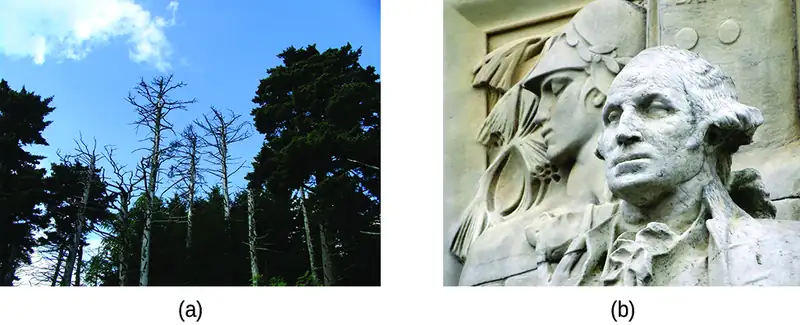
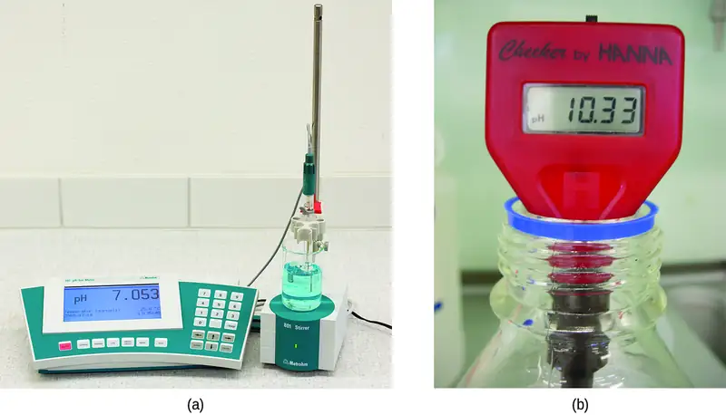
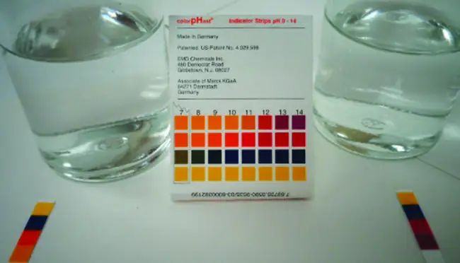
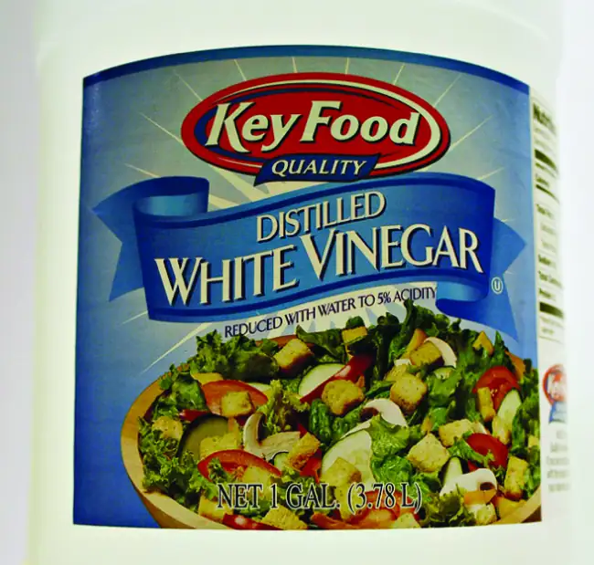
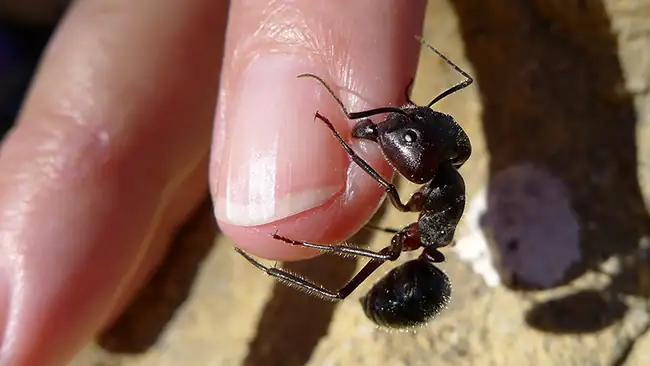
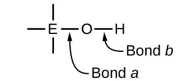
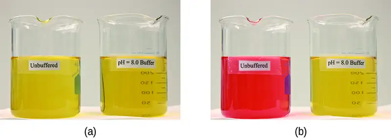
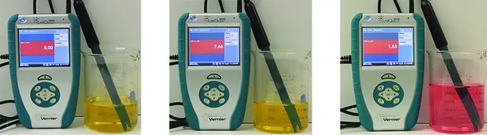

Chapter 14: Acid-Base Equilibria¶
Introduction¶
Learning Objectives
- Brønsted-Lowry Acids and Bases
- pH and pOH
- Relative Strengths of Acids and Bases
- Hydrolysis of Salt Solutions
- Polyprotic Acids
- Buffers
- Acid-Base Titrations
Liquid water is essential to life on our planet, and chemistry involving the characteristic ions of water, H+ and OH–, is widely encountered in nature and society. As introduced in another chapter of this text, acid-base chemistry involves the transfer of hydrogen ions from donors (acids) to acceptors (bases). These H+ transfer reactions are reversible, and the equilibria established by acid-base systems are essential aspects of phenomena ranging from sinkhole formation (Figure 14.1) to oxygen transport in the human body. This chapter will further explore acid-base chemistry with an emphasis on the equilibrium aspects of this important reaction class.
14.1 Brønsted-Lowry Acids and Bases¶
Learning Objectives
By the end of this section, you will be able to:
- Identify acids, bases, and conjugate acid-base pairs according to the Brønsted-Lowry definition
- Write equations for acid and base ionization reactions
- Use the ion-product constant for water to calculate hydronium and hydroxide ion concentrations
- Describe the acid-base behavior of amphiprotic substances
The acid-base reaction class has been studied for quite some time. In 1680, Robert Boyle reported traits of acid solutions that included their ability to dissolve many substances, to change the colors of certain natural dyes, and to lose these traits after coming in contact with alkali (base) solutions. In the eighteenth century, it was recognized that acids have a sour taste, react with limestone to liberate a gaseous substance (now known to be CO2), and interact with alkalis to form neutral substances. In 1815, Humphry Davy contributed greatly to the development of the modern acid-base concept by demonstrating that hydrogen is the essential constituent of acids. Around that same time, Joseph Louis Gay-Lussac concluded that acids are substances that can neutralize bases and that these two classes of substances can be defined only in terms of each other. The significance of hydrogen was reemphasized in 1884 when Svante Arrhenius defined an acid as a compound that dissolves in water to yield hydrogen cations (now recognized to be hydronium ions) and a base as a compound that dissolves in water to yield hydroxide anions.
Johannes Brønsted and Thomas Lowry proposed a more general description in 1923 in which acids and bases were defined in terms of the transfer of hydrogen ions, H+. (Note that these hydrogen ions are often referred to simply as protons, since that subatomic particle is the only component of cations derived from the most abundant hydrogen isotope, 1H.) A compound that donates a proton to another compound is called a Brønsted-Lowry acid, and a compound that accepts a proton is called a Brønsted-Lowry base. An acid-base reaction is, thus, the transfer of a proton from a donor (acid) to an acceptor (base).
The concept of conjugate pairs is useful in describing Brønsted-Lowry acid-base reactions (and other reversible reactions, as well). When an acid donates H+, the species that remains is called the conjugate base of the acid because it reacts as a proton acceptor in the reverse reaction. Likewise, when a base accepts H+, it is converted to its conjugate acid. The reaction between water and ammonia illustrates this idea. In the forward direction, water acts as an acid by donating a proton to ammonia and subsequently becoming a hydroxide ion, OH−, the conjugate base of water. The ammonia acts as a base in accepting this proton, becoming an ammonium ion, \({\text{NH}_{4}}^{\text{+}}{,}\) the conjugate acid of ammonia. In the reverse direction, a hydroxide ion acts as a base in accepting a proton from ammonium ion, which acts as an acid.
![This figure has two rows. In both rows, a chemical reaction is shown. In the first, structural formulas are provided. In this model, in red, an H atom is connected to an F atom with a single bond. The F atom has pairs of electron dots at the top, right, and bottom. This is followed by a plus sign, which is followed in blue by an O atom which has H atoms singly bonded above and to the right. The O atom has pairs of electron dots on its left and lower sides. A double arrow follows. To the right, in brackets is a structure with a central O atom in blue, with blue H atoms singly bonded above and to the right. A pair of blue electron dots is on the lower side of the O atom. To the left of the blue O atom, a red H atom is singly bonded. This is followed by a plus sign and an F atom in red with pairs of electron dots above, right, below, and to the left. This atom also has a superscript negative sign. The reaction is written in symbolic form below. H F is labeled in red below as “Acid.” This is followed by plus H subscript 2 O, which is labeled in blue below as “Base.” A double sided arrow follows. To the right is H subscript 3 O superscript plus, which is labeled in blue below as “Acid.” This is followed by plus and F superscript negative. The label below in red reads, “Base.”](img/cnx-chem-14-01-conjugate-img.webp)
The reaction between a Brønsted-Lowry acid and water is called acid ionization. For example, when hydrogen fluoride dissolves in water and ionizes, protons are transferred from hydrogen fluoride molecules to water molecules, yielding hydronium ions and fluoride ions:
![This figure has two rows. In both rows, a chemical reaction is shown. In the first, structural formulas are provided. In this model, in red, is an O atom which has H atoms singly bonded above and to the right. The O atom has lone pairs of electron dots on its left and lower sides. This is followed by a plus sign. The plus sign is followed, in blue, by an N atom with one lone pair of electron dots. The N atom forms a double bond with a C atom, which forms a single bond with a C atom. The second C atom forms a double bond with another C atom, which forms a single bond with another C atom. The fourth C atom forms a double bond with a fifth C atom, which forms a single bond with the N atom. This creates a ring structure. Each C atom is also bonded to an H atom. An equilibrium arrow follows this structure. To the right, in brackets is a structure where an N atom bonded to an H atom, which is red, appears. The N atom forms a double bond with a C atom, which forms a single bond with a C atom. The second C atom forms a double bond with another C atom, which forms a single bond with another C atom. The fourth C atom forms a double bond with a fifth C atom, which forms a single bond with the N atom. This creates a ring structure. Each C atom is also bonded to an H atom. Outside the brackets, to the right, is a superscript positive sign. This structure is followed by a plus sign. Another structure that appears in brackets also appears. An O atom with three lone pairs of electron dots is bonded to an H atom. There is a superscript negative sign outside the brackets. Under the initial equation, is this equation: H subscript 2 plus C subscript 5 N H subscript 5 equilibrium arrow C subscript 5 N H subscript 6 superscript positive sign plus O H superscript negative sign. H subscript 2 O is labeled, “acid,” in red. C subscript 5 N H subscript 5 is labeled, “base,” in blue. C subscript 5 N H subscript 6 superscript positive sign is labeled, “acid” in blue. O H superscript negative sign is labeled, “base,” in red.](img/cnx-chem-14-01-hf-img.webp)
Base ionization of a species occurs when it accepts protons from water molecules. In the example below, pyridine molecules, C5NH5, undergo base ionization when dissolved in water, yielding hydroxide and pyridinium ions:
![This figure has two rows. In both rows, a chemical reaction is shown. In the first, structural formulas are provided. In this model, in red, is an O atom which has H atoms singly bonded above and to the right. The O atom has lone pairs of electron dots on its left and lower sides. This is followed by a plus sign. The plus sign is followed, in blue, by an N atom with one lone pair of electron dots. The N atom forms a double bond with a C atom, which forms a single bond with a C atom. The second C atom forms a double bond with another C atom, which forms a single bond with another C atom. The fourth C atom forms a double bond with a fifth C atom, which forms a single bond with the N atom. This creates a ring structure. Each C atom is also bonded to an H atom. An equilibrium arrow follows this structure. To the right, in brackets is a structure where an N atom bonded to an H atom, which is red, appears. The N atom forms a double bond with a C atom, which forms a single bond with a C atom. The second C atom forms a double bond with another C atom, which forms a single bond with another C atom. The fourth C atom forms a double bond with a fifth C atom, which forms a single bond with the N atom. This creates a ring structure. Each C atom is also bonded to an H atom. Outside the brackets, to the right, is a superscript positive sign. This structure is followed by a plus sign. Another structure that appears in brackets also appears. An O atom with three lone pairs of electron dots is bonded to an H atom. There is a superscript negative sign outside the brackets. To the right, is the equation: k equals ( C subscript 5 N H subscript 6 superscript positive sign ) ( O H superscript negative sign) all divided by ( C subscript 5 N H subscript 5 ). Under the initial equation, is this equation: H subscript 2 plus C subscript 5 N H subscript 5 equilibrium arrow C subscript 5 N H subscript 6 superscript positive sign plus O H superscript negative sign. H subscript 2 O is labeled, “acid,” in red. C subscript 5 N H subscript 5 is labeled, “base,” in blue. C subscript 5 N H subscript 6 superscript positive sign is labeled, “acid” in blue. O H superscript negative sign is labeled, “base,” in red.](img/cnx-chem-14-01-nh3-img.webp)
The preceding ionization reactions suggest that water may function as both a base (as in its reaction with hydrogen fluoride) and an acid (as in its reaction with ammonia). Species capable of either donating or accepting protons are called amphiprotic, or more generally, amphoteric, a term that may be used for acids and bases per definitions other than the Brønsted-Lowry one. The equations below show the two possible acid-base reactions for two amphiprotic species, bicarbonate ion and water:
The first equation represents the reaction of bicarbonate as an acid with water as a base, whereas the second represents reaction of bicarbonate as a base with water as an acid. When bicarbonate is added to water, both these equilibria are established simultaneously and the composition of the resulting solution may be determined through appropriate equilibrium calculations, as described later in this chapter.
In the liquid state, molecules of an amphiprotic substance can react with one another as illustrated for water in the equations below:
![This figure has two rows. In both rows, a chemical reaction is shown. In the first, structural formulas are provided. In this model, in purple, O atom which has H atoms singly bonded above and to the right. The O atom has pairs of electron dots on its left and lower sides. This is followed by a plus sign, which is followed in green by an O atom which has H atoms singly bonded above and to the right. The O atom has pairs of electron dots on its left and lower sides. A double arrow follows. To the right, in brackets is a structure with a central O atom in green, with green H atoms singly bonded above and to the right. A pair of green electron dots is on the lower side of the O atom. To the left of the green O atom, a purple H atom is singly bonded. Outside the brackets to the right is a superscript plus. This is followed by a plus sign and an O atom in purple with pairs of electron dots above, left, and below. An H atom is singly bonded to the right. This atom has a superscript negative sign. The reaction is written in symbolic form below. H subscript 2 O is labeled in purple below as “Acid subscript 1.” This is followed by plus H subscript 2 O, which is labeled in green below as “Base subscript 2.” A double sided arrow follows. To the right is H subscript 3 O superscript plus, which is labeled in green as below in as “Acid subscript 2.” This is followed by plus and O with pairs of dots above, below, and to the left with a singly bonded H on the right with a superscript negative. The label below in purple reads, “ Base subscript 1.”](img/cnx-chem-14-01-water-img.webp)
The process in which like molecules react to yield ions is called autoionization. Liquid water undergoes autoionization to a very slight extent; at 25 °C, approximately two out of every billion water molecules are ionized. The extent of the water autoionization process is reflected in the value of its equilibrium constant, the ion-product constant for water, Kw:
The slight ionization of pure water is reflected in the small value of the equilibrium constant; at 25 °C, Kw has a value of 1.0 \(\times\) 10−14. The process is endothermic, and so the extent of ionization and the resulting concentrations of hydronium ion and hydroxide ion increase with temperature. For example, at 100 °C, the value for Kw is about 5.6 \(\times\) 10−13, roughly 50 times larger than the value at 25 °C.
Example 14.1 Ion Concentrations in Pure Water
What are the hydronium ion concentration and the hydroxide ion concentration in pure water at 25 °C?
Solution
The autoionization of water yields the same number of hydronium and hydroxide ions. Therefore, in pure water, [H3O+] = [OH−] = x. At 25 °C:
So:
The hydronium ion concentration and the hydroxide ion concentration are the same, 1.0 \(\times\) 10−7 M.
Check Your Learning
The ion product of water at 80 °C is 2.4 \(\times\) 10−13. What are the concentrations of hydronium and hydroxide ions in pure water at 80 °C?
Answer:
[H3O+] = [OH−] = 4.9 \(\times\) 10−7 M
Example 14.2 The Inverse Relation between [H3O+] and [OH−]
A solution of an acid in water has a hydronium ion concentration of 2.0 \(\times\) 10−6 M. What is the concentration of hydroxide ion at 25 °C?
Solution
Use the value of the ion-product constant for water at 25 °C
to calculate the missing equilibrium concentration.
Rearrangement of the Kw expression shows that [OH−] is inversely proportional to [H3O+]:
Compared with pure water, a solution of acid exhibits a higher concentration of hydronium ions (due to ionization of the acid) and a proportionally lower concentration of hydroxide ions. This may be explained via Le Châtelier’s principle as a left shift in the water autoionization equilibrium resulting from the stress of increased hydronium ion concentration.
Substituting the ion concentrations into the Kw expression confirms this calculation, resulting in the expected value:
Check Your Learning
What is the hydronium ion concentration in an aqueous solution with a hydroxide ion concentration of 0.001 M at 25 °C?
Answer:
[H3O+] = 1 \(\times\) 10−11 M
Example 14.3 Representing the Acid-Base Behavior of an Amphoteric Substance
Write separate equations representing the reaction of \(\text{HSO}_{3}{}^{-}\)
(a) as an acid with OH−
(b) as a base with HI
Solution
(a) \(\text{HSO}_{3}{}^{-}(aq)+\text{OH}^{-}(aq)\:\rightleftharpoons\:\text{SO}_{3}{}^{\text{2−}}(aq)+\text{H}_{2}\text{O}(l)\)
(b) \(\text{HSO}_{3}{}^{-}(aq)+\text{HI}(aq)\:\rightleftharpoons\:\text{H}_{2}\text{SO}_{3}(aq)+\text{I}^{-}(aq)\)
Check Your Learning
Write separate equations representing the reaction of \(\text{H}_{2}\text{PO}_{4}{}^{-}\)
(a) as a base with HBr
(b) as an acid with OH−
Answer:
(a) \(\text{H}_{2}\text{PO}_{4}{}^{-}(aq)+\text{HBr}(aq)\:\rightleftharpoons\:\text{H}_{3}\text{PO}_{4}(aq)+\text{Br}^{-}(aq);\) (b) \(\text{H}_{2}\text{PO}_{4}{}^{-}(aq)+\text{OH}^{-}(aq)\:\rightleftharpoons\:\text{HPO}_{4}{}^{\text{2−}}(aq)+\text{H}_{2}\text{O}(l)\)
14.2 pH and pOH¶
Learning Objectives
By the end of this section, you will be able to:
- Explain the characterization of aqueous solutions as acidic, basic, or neutral
- Express hydronium and hydroxide ion concentrations on the pH and pOH scales
- Perform calculations relating pH and pOH
As discussed earlier, hydronium and hydroxide ions are present both in pure water and in all aqueous solutions, and their concentrations are inversely proportional as determined by the ion product of water (Kw). The concentrations of these ions in a solution are often critical determinants of the solution’s properties and the chemical behaviors of its other solutes, and specific vocabulary has been developed to describe these concentrations in relative terms. A solution is neutral if it contains equal concentrations of hydronium and hydroxide ions; acidic if it contains a greater concentration of hydronium ions than hydroxide ions; and basic if it contains a lesser concentration of hydronium ions than hydroxide ions.
A common means of expressing quantities that may span many orders of magnitude is to use a logarithmic scale. One such scale that is very popular for chemical concentrations and equilibrium constants is based on the p-function, defined as shown where “X” is the quantity of interest and “log” is the base-10 logarithm:
The pH of a solution is therefore defined as shown here, where [H3O+] is the molar concentration of hydronium ion in the solution:
Rearranging this equation to isolate the hydronium ion molarity yields the equivalent expression:
Likewise, the hydroxide ion molarity may be expressed as a p-function, or pOH:
or
Finally, the relation between these two ion concentration expressed as p-functions is easily derived from the Kw expression:
At 25 °C, the value of Kw is 1.0 \(\times\) 10−14, and so:
As was shown in Example 14.1, the hydronium ion molarity in pure water (or any neutral solution) is 1.0 \(\times\) 10−7 M at 25 °C. The pH and pOH of a neutral solution at this temperature are therefore:
And so, at this temperature, acidic solutions are those with hydronium ion molarities greater than 1.0 \(\times\) 10−7 M and hydroxide ion molarities less than 1.0 \(\times\) 10−7 M (corresponding to pH values less than 7.00 and pOH values greater than 7.00). Basic solutions are those with hydronium ion molarities less than 1.0 \(\times\) 10−7 M and hydroxide ion molarities greater than 1.0 \(\times\) 10−7 M (corresponding to pH values greater than 7.00 and pOH values less than 7.00).
Since the autoionization constant Kw is temperature dependent, these correlations between pH values and the acidic/neutral/basic adjectives will be different at temperatures other than 25 °C. For example, the “Check Your Learning” exercise accompanying Example 14.1 showed the hydronium molarity of pure water at 80 °C is 4.9 \(\times\) 10−7 M, which corresponds to pH and pOH values of:
At this temperature, then, neutral solutions exhibit pH = pOH = 6.31, acidic solutions exhibit pH less than 6.31 and pOH greater than 6.31, whereas basic solutions exhibit pH greater than 6.31 and pOH less than 6.31. This distinction can be important when studying certain processes that occur at other temperatures, such as enzyme reactions in warm-blooded organisms at a temperature around 36–40 °C. Unless otherwise noted, references to pH values are presumed to be those at 25 °C (Table 14.1).
Table 14.1
| Summary of Relations for Acidic, Basic and Neutral Solutions | ||
|---|---|---|
| Classification | Relative Ion Concentrations | pH at 25 °C |
| acidic | [H3O+] > [OH−] | pH < 7 |
| neutral | [H3O+] = [OH−] | pH = 7 |
| basic | [H3O+] < [OH−] | pH > 7 |
Figure 14.2 shows the relationships between [H3O+], [OH−], pH, and pOH for solutions classified as acidic, basic, and neutral.
![A table is provided with 5 columns. The first column is labeled “left bracket H subscript 3 O superscript plus right bracket (M).” Powers of ten are listed in the column beginning at 10 superscript 1, including 10 superscript 0 or 1, 10 superscript negative 1, decreasing by single powers of 10 to 10 superscript negative 15. The second column is labeled “left bracket O H superscript negative right bracket (M).” Powers of ten are listed in the column beginning at 10 superscript negative 15, increasing by single powers of 10 to including 10 superscript 0 or 1, and 10 superscript 1. The third column is labeled “p H.” Values listed in this column are integers beginning at negative 1, increasing by ones up to 14. The fourth column is labeled “p O H.” Values in this column are integers beginning at 15, decreasing by ones up to negative 1. The fifth column is labeled “Sample Solution.” A vertical line at the left of the column has tick marks corresponding to each p H level in the table. Substances are listed next to this line segment with line segments connecting them to the line to show approximate p H and p O H values. 1 M H C l is listed at a p H of 0. Gastric juices are listed at a p H of about 1.5. Lime juice is listed at a p H of about 2, followed by 1 M C H subscript 3 C O subscript 2 H, followed by stomach acid at a p H value of nearly 3. Wine is listed around 3.5. Coffee is listed just past 5. Pure water is listed at a p H of 7. Pure blood is just beyond 7. Milk of Magnesia is listed just past a p H of 10.5. Household ammonia is listed just before a pH of 12. 1 M N a O H is listed at a p H of 0. To the right of this labeled arrow is an arrow that points up and down through the height of the column. A beige strip passes through the table and to this double headed arrow at p H 7. To the left of the double headed arrow in this beige strip is the label “neutral.” A narrow beige strip runs through the arrow. Just above and below this region, the arrow is purple. It gradually turns to a bright red as it extends upward. At the top of the arrow, near the head of the arrow is the label “acidic.” Similarly, the lower region changes color from purple to blue moving to the bottom of the column. The head at this end of the arrow is labeled “basic.”](img/cnx-chem-14-02-phscale.webp)
Example 14.4 Calculation of pH from [H3O+]
What is the pH of stomach acid, a solution of HCl with a hydronium ion concentration of 1.2 \(\times\) 10−3 M?
Solution
(The use of logarithms is explained in Appendix B. When taking the log of a value, keep as many decimal places in the result as there are significant figures in the value.)
Check Your Learning
Water exposed to air contains carbonic acid, H2CO3, due to the reaction between carbon dioxide and water:
Air-saturated water has a hydronium ion concentration caused by the dissolved CO2 of 2.0 \(\times\) 10−6 M, about 20-times larger than that of pure water. Calculate the pH of the solution at 25 °C.
Answer:
5.70
Example 14.5 Calculation of Hydronium Ion Concentration from pH
Calculate the hydronium ion concentration of blood, the pH of which is 7.3.
Solution
(On a calculator take the antilog, or the “inverse” log, of −7.3, or calculate 10−7.3.)
Check Your Learning
Calculate the hydronium ion concentration of a solution with a pH of −1.07.
Answer:
12 M
How Sciences Interconnect: Environmental Science
Normal rainwater has a pH between 5 and 6 due to the presence of dissolved CO2 which forms carbonic acid:
Acid rain is rainwater that has a pH of less than 5, due to a variety of nonmetal oxides, including CO2, SO2, SO3, NO, and NO2 being dissolved in the water and reacting with it to form not only carbonic acid, but sulfuric acid and nitric acid. The formation and subsequent ionization of sulfuric acid are shown here:
Carbon dioxide is naturally present in the atmosphere because most organisms produce it as a waste product of metabolism. Carbon dioxide is also formed when fires release carbon stored in vegetation or fossil fuels. Sulfur trioxide in the atmosphere is naturally produced by volcanic activity, but it also originates from burning fossil fuels, which have traces of sulfur, and from the process of “roasting” ores of metal sulfides in metal-refining processes. Oxides of nitrogen are formed in internal combustion engines where the high temperatures make it possible for the nitrogen and oxygen in air to chemically combine.
Acid rain is a particular problem in industrial areas where the products of combustion and smelting are released into the air without being stripped of sulfur and nitrogen oxides. In North America and Europe until the 1980s, it was responsible for the destruction of forests and freshwater lakes, when the acidity of the rain actually killed trees, damaged soil, and made lakes uninhabitable for all but the most acid-tolerant species. Acid rain also corrodes statuary and building facades that are made of marble and limestone (Figure 14.3). Regulations limiting the amount of sulfur and nitrogen oxides that can be released into the atmosphere by industry and automobiles have reduced the severity of acid damage to both natural and manmade environments in North America and Europe. It is now a growing problem in industrial areas of China and India.
For further information on acid rain, visit this website hosted by the US Environmental Protection Agency.

Example 14.6 Calculation of pOH
What are the pOH and the pH of a 0.0125-M solution of potassium hydroxide, KOH?
Solution
Potassium hydroxide is a highly soluble ionic compound and completely dissociates when dissolved in dilute solution, yielding [OH−] = 0.0125 M:
The pH can be found from the pOH:
Check Your Learning
The hydronium ion concentration of vinegar is approximately 4 \(\times\) 10−3 M. What are the corresponding values of pOH and pH?
Answer:
pOH = 11.6, pH = 2.4
The acidity of a solution is typically assessed experimentally by measurement of its pH. The pOH of a solution is not usually measured, as it is easily calculated from an experimentally determined pH value. The pH of a solution can be directly measured using a pH meter (Figure 14.4).

The pH of a solution may also be visually estimated using colored indicators (Figure 14.5). The acid-base equilibria that enable use of these indicator dyes for pH measurements are described in a later section of this chapter.
![This figure contains two images. The first shows a variety of colors of solutions in labeled beakers. A red solution in a beaker is labeled “0.10 M H C l.” An orange solution is labeled “0.10 M C H subscript 3 C O O H.” A yellow-orange solution is labeled “0.1 M N H subscript 4 C l.” A yellow solution is labeled “deionized water.” A second solution beaker is labeled “0.10 M K C l.” A green solution is labeled “0.10 M aniline.” A blue solution is labeled “0.10 M N H subscript 4 C l (a q).” A final beaker containing a dark blue solution is labeled “0.10 M N a O H.” Image b shows pHydrion paper that is used for measuring pH in the range of p H from 1 to 12. The color scale for identifying p H based on color is shown along with several of the test strips used to evaluate p H.](img/cnx-chem-14-02-indicator.webp)
14.3 Relative Strengths of Acids and Bases¶
Learning Objectives
By the end of this section, you will be able to:
- Assess the relative strengths of acids and bases according to their ionization constants
- Rationalize trends in acid–base strength in relation to molecular structure
- Carry out equilibrium calculations for weak acid–base systems
Acid and Base Ionization Constants¶
The relative strength of an acid or base is the extent to which it ionizes when dissolved in water. If the ionization reaction is essentially complete, the acid or base is termed strong; if relatively little ionization occurs, the acid or base is weak. As will be evident throughout the remainder of this chapter, there are many more weak acids and bases than strong ones. The most common strong acids and bases are listed in Figure 14.6.
![This table has seven rows and two columns. The first row is a header row, and it labels each column, “6 Strong Acids,” and, “6 Strong Bases.” Under the “6 Strong Acids” column are the following: H C l O subscript 4 perchloric acid; H C l hydrochloric acid; H B r hydrobromic acid; H I hydroiodic acid; H N O subscript 3 nitric acid; H subscript 2 S O subscript 4 sulfuric acid. Under the “6 Strong Bases” column are the following: L i O H lithium hydroxide; N a O H sodium hydroxide; K O H potassium hydroxide; C a ( O H ) subscript 2 calcium hydroxide; S r ( O H ) subscript 2 strontium hydroxide; B a ( O H ) subscript 2 barium hydroxide.](img/cnx-chem-14-03-strong.webp)
The relative strengths of acids may be quantified by measuring their equilibrium constants in aqueous solutions. In solutions of the same concentration, stronger acids ionize to a greater extent, and so yield higher concentrations of hydronium ions than do weaker acids. The equilibrium constant for an acid is called the acid-ionization constant, Ka. For the reaction of an acid HA:
the acid ionization constant is written
where the concentrations are those at equilibrium. Although water is a reactant in the reaction, it is the solvent as well, so we do not include [H2O] in the equation. The larger the Ka of an acid, the larger the concentration of \(\text{H}_{3}\text{O}^{\text{+}}\) and A− relative to the concentration of the nonionized acid, HA, in an equilibrium mixture, and the stronger the acid. An acid is classified as “strong” when it undergoes complete ionization, in which case the concentration of HA is zero and the acid ionization constant is immeasurably large (Ka ≈ ∞). Acids that are partially ionized are called “weak,” and their acid ionization constants may be experimentally measured. A table of ionization constants for weak acids is provided in Appendix H.
To illustrate this idea, three acid ionization equations and Ka values are shown below. The ionization constants increase from first to last of the listed equations, indicating the relative acid strength increases in the order CH3CO2H < HNO2 < \(\text{HSO}_{4}{}^{-}:\)
Another measure of the strength of an acid is its percent ionization. The percent ionization of a weak acid is defined in terms of the composition of an equilibrium mixture:
where the numerator is equivalent to the concentration of the acid's conjugate base (per stoichiometry, [A−] = [H3O+]). Unlike the Ka value, the percent ionization of a weak acid varies with the initial concentration of acid, typically decreasing as concentration increases. Equilibrium calculations of the sort described later in this chapter can be used to confirm this behavior.
Example 14.7 Calculation of Percent Ionization from pH
Calculate the percent ionization of a 0.125-M solution of nitrous acid (a weak acid), with a pH of 2.09.
Solution
The percent ionization for an acid is:
Converting the provided pH to hydronium ion molarity yields
Substituting this value and the provided initial acid concentration into the percent ionization equation gives
(Recall the provided pH value of 2.09 is logarithmic, and so it contains just two significant digits, limiting the certainty of the computed percent ionization.)
Check Your Learning
Calculate the percent ionization of a 0.10-M solution of acetic acid with a pH of 2.89.
Answer:
1.3% ionized
Link to Learning
View the simulation of strong and weak acids and bases at the molecular level.
Just as for acids, the relative strength of a base is reflected in the magnitude of its base-ionization constant (Kb) in aqueous solutions. In solutions of the same concentration, stronger bases ionize to a greater extent, and so yield higher hydroxide ion concentrations than do weaker bases. A stronger base has a larger ionization constant than does a weaker base. For the reaction of a base, B:
the ionization constant is written as
Inspection of the data for three weak bases presented below shows the base strength increases in the order \(\text{NO}_{2}{}^{-} \lt \text{CH}_{2}\text{CO}_{2}{}^{-} \lt \text{NH}_{3}.\)
A table of ionization constants for weak bases appears in Appendix I. As for acids, the relative strength of a base is also reflected in its percent ionization, computed as
but will vary depending on the base ionization constant and the initial concentration of the solution.
Relative Strengths of Conjugate Acid-Base Pairs¶
Brønsted-Lowry acid-base chemistry is the transfer of protons; thus, logic suggests a relation between the relative strengths of conjugate acid-base pairs. The strength of an acid or base is quantified in its ionization constant, Ka or Kb, which represents the extent of the acid or base ionization reaction. For the conjugate acid-base pair HA / A−, ionization equilibrium equations and ionization constant expressions are
Adding these two chemical equations yields the equation for the autoionization for water:
As discussed in another chapter on equilibrium, the equilibrium constant for a summed reaction is equal to the mathematical product of the equilibrium constants for the added reactions, and so
This equation states the relation between ionization constants for any conjugate acid-base pair, namely, their mathematical product is equal to the ion product of water, Kw. By rearranging this equation, a reciprocal relation between the strengths of a conjugate acid-base pair becomes evident:
The inverse proportional relation between Ka and Kb means the stronger the acid or base, the weaker its conjugate partner. Figure 14.7 illustrates this relation for several conjugate acid-base pairs.
![The diagram shows two horizontal bars. The first, labeled, “Relative acid strength,” at the top is red on the left and gradually changes to purple on the right. The red end at the left is labeled, “Stronger acids.” The purple end at the right is labeled, “Weaker acids.” Just outside the bar to the lower left is the label, “K subscript a.” The bar is marked off in increments with a specific acid listed above each increment. The first mark is at 1.0 with H subscript 3 O superscript positive sign. The second is ten raised to the negative two with H C l O subscript 2. The third is ten raised to the negative 4 with H F. The fourth is ten raised to the negative 6 with H subscript 2 C O subscript 3. The fifth is ten raised to a negative 8 with C H subscript 3 C O O H. The sixth is ten raised to the negative ten with N H subscript 4 superscript positive sign. The seventh is ten raised to a negative 12 with H P O subscript 4 superscript 2 negative sign. The eighth is ten raised to the negative 14 with H subscript 2 O. Similarly the second bar, which is labeled “Relative conjugate base strength,” is purple at the left end and gradually becomes blue at the right end. Outside the bar to the left is the label, “Weaker bases.” Outside the bar to the right is the label, “Stronger bases.” Below and to the left of the bar is the label, “K subscript b.” The bar is similarly marked at increments with bases listed above each increment. The first is at ten raised to the negative 14 with H subscript 2 O above it. The second is ten raised to the negative 12 C l O subscript 2 superscript negative sign. The third is ten raised to the negative ten with F superscript negative sign. The fourth is ten raised to a negative eight with H C O subscript 3 superscript negative sign. The fifth is ten raised to the negative 6 with C H subscript 3 C O O superscript negative sign. The sixth is ten raised to the negative 4 with N H subscript 3. The seventh is ten raised to the negative 2 with P O subscript 4 superscript three negative sign. The eighth is 1.0 with O H superscript negative sign.](img/cnx-chem-14-03-strengths.webp)
![This figure includes a table separated into a left half which is labeled “Acids” and a right half labeled “Bases.” A red arrow points up the left side, which is labeled “Increasing acid strength.” Similarly, a blue arrow points downward along the right side, which is labeled “Increasing base strength.” Names of acids and bases are listed next to each arrow toward the center of the table, followed by chemical formulas. Acids listed top to bottom are sulfuric acid, H subscript 2 S O subscript 4, hydrogen iodide, H I, hydrogen bromide, H B r, hydrogen chloride, H C l, nitric acid, H N O subscript 3, hydronium ion ( in pink text) H subscript 3 O superscript plus, hydrogen sulfate ion, H S O subscript 4 superscript negative, phosphoric acid, H subscript 3 P O subscript 4, hydrogen fluoride, H F, nitrous acid, H N O subscript 2, acetic acid, C H subscript 3 C O subscript 2 H, carbonic acid H subscript 2 C O subscript 3, hydrogen sulfide, H subscript 2 S, ammonium ion, N H subscript 4 superscript +, hydrogen cyanide, H C N, hydrogen carbonate ion, H C O subscript 3 superscript negative, water (shaded in beige) H subscript 2 O, hydrogen sulfide ion, H S superscript negative, ethanol, C subscript 2 H subscript 5 O H, ammonia, N H subscript 3, hydrogen, H subscript 2, methane, and C H subscript 4. The acids at the top of the listing from sulfuric acid through nitric acid are grouped with a bracket to the right labeled “Undergo complete acid ionization in water.” Similarly, the acids at the bottom from hydrogen sulfide ion through methane are grouped with a bracket and labeled, “Do not undergo acid ionization in water.” The right half of the figure lists bases and formulas. From top to bottom the bases listed are hydrogen sulfate ion, H S O subscript 4 superscript negative, iodide ion, I superscript negative, bromide ion, B r superscript negative, chloride ion, C l superscript negative, nitrate ion, N O subscript 3 superscript negative, water (shaded in beige), H subscript 2 O, sulfate ion, S O subscript 4 superscript 2 negative, dihydrogen phosphate ion, H subscript 2 P O subscript 4 superscript negative, fluoride ion, F superscript negative, nitrite ion, N O subscript 2 superscript negative, acetate ion, C H subscript 3 C O subscript 2 superscript negative, hydrogen carbonate ion, H C O subscript 3 superscript negative, hydrogen sulfide ion, H S superscript negative, ammonia, N H subscript 3, cyanide ion, C N superscript negative, carbonate ion, C O subscript 3 superscript 2 negative, hydroxide ion (in blue), O H superscript negative, sulfide ion, S superscript 2 negative, ethoxide ion, C subscript 2 H subscript 5 O superscript negative, amide ion N H subscript 2 superscript negative, hydride ion, H superscript negative, and methide ion C H subscript 3 superscript negative. The bases at the top, from perchlorate ion through nitrate ion are group with a bracket which is labeled “Do not undergo base ionization in water.” Similarly, the lower 5 in the listing, from sulfide ion through methide ion are grouped and labeled “Undergo complete base ionization in water.”](img/cnx-chem-14-03-corresp.webp)
The listing of conjugate acid–base pairs shown in Figure 14.8 is arranged to show the relative strength of each species as compared with water, whose entries are highlighted in each of the table’s columns. In the acid column, those species listed below water are weaker acids than water. These species do not undergo acid ionization in water; they are not Brønsted-Lowry acids. All the species listed above water are stronger acids, transferring protons to water to some extent when dissolved in an aqueous solution to generate hydronium ions. Species above water but below hydronium ion are weak acids, undergoing partial acid ionization, wheres those above hydronium ion are strong acids that are completely ionized in aqueous solution.
If all these strong acids are completely ionized in water, why does the column indicate they vary in strength, with nitric acid being the weakest and perchloric acid the strongest? Notice that the sole acid species present in an aqueous solution of any strong acid is H3O+(aq), meaning that hydronium ion is the strongest acid that may exist in water; any stronger acid will react completely with water to generate hydronium ions. This limit on the acid strength of solutes in a solution is called a leveling effect. To measure the differences in acid strength for “strong” acids, the acids must be dissolved in a solvent that is less basic than water. In such solvents, the acids will be “weak,” and so any differences in the extent of their ionization can be determined. For example, the binary hydrogen halides HCl, HBr, and HI are strong acids in water but weak acids in ethanol (strength increasing HCl < HBr < HI).
The right column of Figure 14.8 lists a number of substances in order of increasing base strength from top to bottom. Following the same logic as for the left column, species listed above water are weaker bases and so they don’t undergo base ionization when dissolved in water. Species listed between water and its conjugate base, hydroxide ion, are weak bases that partially ionize. Species listed below hydroxide ion are strong bases that completely ionize in water to yield hydroxide ions (i.e., they are leveled to hydroxide). A comparison of the acid and base columns in this table supports the reciprocal relation between the strengths of conjugate acid-base pairs. For example, the conjugate bases of the strong acids (top of table) are all of negligible strength. A strong acid exhibits an immeasurably large Ka, and so its conjugate base will exhibit a Kb that is essentially zero:
\(\begin{array}{l} \text{strong}\:\text{acid}:\hspace{3em}K_{\text{a}}\approx\infty \\ \text{conjugate}\:\text{base}:\:K_{\text{b}}=K_{\text{w}}\text{/}K_{\text{a}}=K_{\text{w}}\text{/}\infty\approx 0 \end{array}\)
A similar approach can be used to support the observation that conjugate acids of strong bases (Kb ≈ ∞) are of negligible strength (Ka ≈ 0).
Example 14.8 Calculating Ionization Constants for Conjugate Acid-Base Pairs
Use the Kb for the nitrite ion, \(\text{NO}_{2}{}^{-},\) to calculate the Ka for its conjugate acid.
Solution
Kb for \(\text{NO}_{2}{}^{-}\) is given in this section as 2.17 \(\times\) 10−11. The conjugate acid of \(\text{NO}_{2}{}^{-}\) is HNO2; Ka for HNO2 can be calculated using the relationship:
Solving for Ka yields
This answer can be verified by finding the Ka for HNO2 in Appendix H.
Check Your Learning
Determine the relative acid strengths of \(\text{NH}_{4}{}^{\text{+}}\) and HCN by comparing their ionization constants. The ionization constant of HCN is given in Appendix H as 4.9 \(\times\) 10−10. The ionization constant of \(\text{NH}_{4}{}^{\text{+}}\) is not listed, but the ionization constant of its conjugate base, NH3, is listed as 1.8 \(\times\) 10−5.
Answer:
\(\text{NH}_{4}{}^{\text{+}}\) is the slightly stronger acid (Ka for \(\text{NH}_{4}{}^{\text{+}}\) = 5.6 \(\times\) 10−10).
Acid-Base Equilibrium Calculations¶
The chapter on chemical equilibria introduced several types of equilibrium calculations and the various mathematical strategies that are helpful in performing them. These strategies are generally useful for equilibrium systems regardless of chemical reaction class, and so they may be effectively applied to acid-base equilibrium problems. This section presents several example exercises involving equilibrium calculations for acid-base systems.
![This image shows two bottles containing clear colorless solutions. Each bottle contains a single p H indicator strip. The strip in the bottle on the left is red, and a similar red strip is placed on a filter paper circle in front of the bottle on surface on which the bottles are resting. Similarly, the second bottle on the right contains and orange strip and an orange strip is placed in front of it on a filter paper circle. Between the two bottles is a pack of p Hydrion papers with a p H color scale on its cover.](img/cnx-chem-14-03-acetate-img.webp)

Example 14.9 Determination of Ka from Equilibrium Concentrations
Acetic acid is the principal ingredient in vinegar (Figure 14.9) that provides its sour taste. At equilibrium, a solution contains [CH3CO2H] = 0.0787 M and \([\text{H}_{3}\text{O}^{\text{+}}]=[\text{CH}_{3}\text{CO}_{2}{}^{-}]=0.00118\:M.\) What is the value of Ka for acetic acid?

Solution
The relevant equilibrium equation and its equilibrium constant expression are shown below. Substitution of the provided equilibrium concentrations permits a straightforward calculation of the Ka for acetic acid.
Check Your Learning
The \(\text{HSO}_{4}{}^{-}\) ion, weak acid used in some household cleansers:
What is the acid ionization constant for this weak acid if an equilibrium mixture has the following composition: \([\text{H}_{3}\text{O}^{\text{+}}]\) = 0.027 M; \([\text{HSO}_{4}{}^{-}]=0.29\:M;\) and \([\text{SO}_{4}{}^{2-}]=0.13\:M?\)
Answer:
Ka for \(\text{HSO}_{4}{}^{-}\) = 1.2 \(\times\) 10−2
Example 14.10 Determination of Kb from Equilibrium Concentrations
Caffeine, C8H10N4O2 is a weak base. What is the value of Kb for caffeine if a solution at equilibrium has [C8H10N4O2] = 0.050 M, \([\text{C}_{8}\text{H}_{10}\text{N}_{4}\text{O}_{2}\text{H}^{\text{+}}]\) = 5.0 \(\times\) 10−3 M, and [OH−] = 2.5 \(\times\) 10−3 M?
Solution
The relevant equilibrium equation and its equilibrium constant expression are shown below. Substitution of the provided equilibrium concentrations permits a straightforward calculation of the Kb for caffeine.
Check Your Learning
What is the equilibrium constant for the ionization of the \(\text{HPO}_{4}{}^{2-}\) ion, a weak base
if the composition of an equilibrium mixture is as follows: [OH−] = 1.3 \(\times\) 10−6 M; \([\text{H}_{2}\text{PO}_{4}{}^{-}]=0.042\:M;\) and \([\text{HPO}_{4}{}^{2-}]=0.341\:M?\)
Answer:
Kb for \(\text{HPO}_{4}{}^{2-}=1.6\:\times\:{10}^{-7}\)
Example 14.11 Determination of Ka or Kb from pH
The pH of a 0.0516-M solution of nitrous acid, HNO2, is 2.34. What is its Ka?
Solution
The nitrous acid concentration provided is a formal concentration, one that does not account for any chemical equilibria that may be established in solution. Such concentrations are treated as “initial” values for equilibrium calculations using the ICE table approach. Notice the initial value of hydronium ion is listed as approximately zero because a small concentration of H3O+ is present (1 × 10−7 M) due to the autoprotolysis of water. In many cases, such as all the ones presented in this chapter, this concentration is much less than that generated by ionization of the acid (or base) in question and may be neglected.
The pH provided is a logarithmic measure of the hydronium ion concentration resulting from the acid ionization of the nitrous acid, and so it represents an “equilibrium” value for the ICE table:
The ICE table for this system is then
![This table has two main columns and four rows. The first row for the first column does not have a heading and then has the following in the first column: Initial concentration ( M ), Change ( M ), Equilibrium concentration ( M ). The second column has the header of “H N O subscript 2 plus sign H subscript 2 O equilibrium sign H subscript 3 O superscript positive sign plus sign N O subscript 2 superscript negative sign.” Under the second column is a subgroup of four columns and three rows. The first column has the following: 0.0516, negative 0.0046, 0.0470. The second column is blank in all three rows. The third column has the following: approximately 0, positive 0.0046, 0.0046. The fourth column has the following: 0, positive 0.0046, 0.0046.](img/cnx-chem-14-03-icetable2-img.webp)
Finally, calculate the value of the equilibrium constant using the data in the table:
Check Your Learning.
The pH of a solution of household ammonia, a 0.950-M solution of NH3, is 11.612. What is Kb for NH3.
Answer:
Kb = 1.8 \(\times\) 10−5
Example 14.12 Calculating Equilibrium Concentrations in a Weak Acid Solution
Formic acid, HCO2H, is one irritant that causes the body’s reaction to some ant bites and stings (Figure 14.10).

What is the concentration of hydronium ion and the pH of a 0.534-M solution of formic acid?
Solution
The ICE table for this system is
![This table has two main columns and four rows. The first row for the first column does not have a heading and then has the following in the first column: Initial concentration ( M ), Change ( M ), Equilibrium concentration ( M ). The second column has the header of “H C O subscript 2 H plus sign H subscript 2 O equilibrium arrow H subscript 3 O superscript positive sign.” Under the second column is a subgroup of four columns and three rows. The first column has the following: 0.534, blank, 0.534 minus x. The second column is blank in all three rows. The third column has the following: approximately 0, positive x, x. The fourth column has the following: 0, positive x, x.](img/cnx-chem-14-03-icetable3-img.webp)
Substituting the equilibrium concentration terms into the Ka expression gives
The relatively large initial concentration and small equilibrium constant permits the simplifying assumption that x will be much lesser than 0.534, and so the equation becomes
Solving the equation for x yields
To check the assumption that x is small compared to 0.534, its relative magnitude can be estimated:
Because x is less than 5% of the initial concentration, the assumption is valid.
As defined in the ICE table, x is equal to the equilibrium concentration of hydronium ion:
Finally, the pH is calculated to be
Check Your Learning
Only a small fraction of a weak acid ionizes in aqueous solution. What is the percent ionization of a 0.100-M solution of acetic acid, CH3CO2H?
Answer:
percent ionization = 1.3%
Example 14.13 Calculating Equilibrium Concentrations in a Weak Base Solution
Find the concentration of hydroxide ion, the pOH, and the pH of a 0.25-M solution of trimethylamine, a weak base:
Solution
The ICE table for this system is![This table has two main columns and four rows. The first row for the first column does not have a heading and then has the following in the first column: Initial concentration ( M ), Change ( M ), Equilibrium concentration ( M ). The second column has the header of “( C H subscript 3 ) subscript 3 N plus sign H subscript 2 O equilibrium arrow ( C H subscript 3 ) subscript 3 N H superscript positive sign plus sign O H superscript positive sign.” Under the second column is a subgroup of four columns and three rows. The first column has the following: 0.25, negative x, 0.25 plus sign negative x. The second column is blank in all three rows. The third column has the following: 0, x, 0 plus x. The fourth column has the following: approximately 0, x, and approximately 0 plus x.](img/cnx-chem-14-03-icetable4-img.webp)
Substituting the equilibrium concentration terms into the Kb expression gives
Assuming x << 0.25 and solving for x yields
This value is less than 5% of the initial concentration (0.25), so the assumption is justified.
As defined in the ICE table, x is equal to the equilibrium concentration of hydroxide ion:
The pOH is calculated to be
Using the relation introduced in the previous section of this chapter:
permits the computation of pH:
Check Your Learning
Calculate the hydroxide ion concentration and the percent ionization of a 0.0325-M solution of ammonia, a weak base with a Kb of 1.76 \(\times\) 10−5.
Answer:
7.56 \(\times\) 10−4 M, 2.33%
In some cases, the strength of the weak acid or base and its formal (initial) concentration result in an appreciable ionization. Though the ICE strategy remains effective for these systems, the algebra is a bit more involved because the simplifying assumption that x is negligible cannot be made. Calculations of this sort are demonstrated in Example 14.14 below.
Example 14.14 Calculating Equilibrium Concentrations without Simplifying Assumptions
Sodium bisulfate, NaHSO4, is used in some household cleansers as a source of the \(\text{HSO}_{4}{}^{-}\) ion, a weak acid. What is the pH of a 0.50-M solution of \(\text{HSO}_{4}{}^{-}?\)
Solution
The ICE table for this system is![This table has two main columns and four rows. The first row for the first column does not have a heading and then has the following in the first column: Initial concentration ( M ), Change ( M ), Equilibrium ( M ). The second column has the header of “H S O subscript 4 superscript negative sign plus sign H subscript 2 O equilibrium sign H subscript 3 O superscript positive sign plus sign S O subscript 4 superscript 2 superscript negative sign.” Under the second column is a subgroup of four columns and three rows. The first column has the following: 0.50, negative x, 0.50 minus x. The second column is blank for all three rows. The third column has the following: approximately 0, positive x, x. The fourth column has the following: 0, positive x, x.](img/cnx-chem-14-03-icetable5-img.webp)
Substituting the equilibrium concentration terms into the Ka expression gives
If the assumption that x << 0.5 is made, simplifying and solving the above equation yields
This value of x is clearly not significantly less than 0.50 M; rather, it is approximately 15% of the initial concentration:
When we check the assumption, we calculate:
Because the simplifying assumption is not valid for this system, the equilibrium constant expression is solved as follows:
Rearranging this equation yields
Writing the equation in quadratic form gives
Solving for the two roots of this quadratic equation results in a negative value that may be discarded as physically irrelevant and a positive value equal to x. As defined in the ICE table, x is equal to the hydronium concentration.
Check Your Learning
Calculate the pH in a 0.010-M solution of caffeine, a weak base:
Answer:
pH 11.16
Effect of Molecular Structure on Acid-Base Strength¶
Binary Acids and Bases¶
In the absence of any leveling effect, the acid strength of binary compounds of hydrogen with nonmetals (A) increases as the H-A bond strength decreases down a group in the periodic table. For group 17, the order of increasing acidity is HF < HCl < HBr < HI. Likewise, for group 16, the order of increasing acid strength is H2O < H2S < H2Se < H2Te.
Across a row in the periodic table, the acid strength of binary hydrogen compounds increases with increasing electronegativity of the nonmetal atom because the polarity of the H-A bond increases. Thus, the order of increasing acidity (for removal of one proton) across the second row is CH4 < NH3 < H2O < HF; across the third row, it is SiH4 < PH3 < H2S < HCl (see Figure 14.11).
![This diagram has two rows and four columns. Red arrows point left across the bottom of the figure and down at the right side and are labeled “Increasing acid strength.” Blue arrows point left across the bottom and up at the right side of the figure and are labeled “Increasing base strength.” The first column is labeled 14 at the top and two white squares are beneath it. The first has the number 6 in the upper left corner and the formula C H subscript 4 in the center along with designation Neither acid nor base. The second square contains the number 14 in the upper left corner, the formula C H subscript 4 at the center and the designation Neither acid nor base. The second column is labeled 15 at the top and two blue squares are beneath it. The first has the number 7 in the upper left corner and the formula N H subscript 3 in the center along with the designation Weak base and K subscript b equals 1.8 times 10 superscript negative 5. The second square contains the number 15 in the upper left corner, the formula P H subscript 3 at the center and the designation Very weak base and K subscript b equals 4 times 10 superscript negative 28. The third column is labeled 16 at the top and two squares are beneath it. The first is shaded tan and has the number 8 in the upper left corner and the formula H subscript 2 O in the center along with the designation neutral. The second square is shaded pink, contains the number 16 in the upper left corner, the formula H subscript 2 S at the center and the designation Weak acid and K subscript a equals 9.5 times 10 superscript negative 8. The fourth column is labeled 17 at the top and two squares are beneath it. The first is shaded pink, has the number 9 in the upper left corner and the formula H F in the center along with the designation Weak acid and K subscript a equals 6.8 times 10 superscript negative 4. The second square is shaded a deeper pink, contains the number 17 in the upper left corner, the formula H C l at the center, and the designation Strong acid.](img/cnx-chem-14-03-acidph.webp)
Ternary Acids and Bases¶
Ternary compounds composed of hydrogen, oxygen, and some third element (“E”) may be structured as depicted in the image below. In these compounds, the central E atom is bonded to one or more O atoms, and at least one of the O atoms is also bonded to an H atom, corresponding to the general molecular formula OmE(OH)n. These compounds may be acidic, basic, or amphoteric depending on the properties of the central E atom. Examples of such compounds include sulfuric acid, O2S(OH)2, sulfurous acid, OS(OH)2, nitric acid, O2NOH, perchloric acid, O3ClOH, aluminum hydroxide, Al(OH)3, calcium hydroxide, Ca(OH)2, and potassium hydroxide, KOH:

If the central atom, E, has a low electronegativity, its attraction for electrons is low. Little tendency exists for the central atom to form a strong covalent bond with the oxygen atom, and bond a between the element and oxygen is more readily broken than bond b between oxygen and hydrogen. Hence bond a is ionic, hydroxide ions are released to the solution, and the material behaves as a base—this is the case with Ca(OH)2 and KOH. Lower electronegativity is characteristic of the more metallic elements; hence, the metallic elements form ionic hydroxides that are by definition basic compounds.
If, on the other hand, the atom E has a relatively high electronegativity, it strongly attracts the electrons it shares with the oxygen atom, making bond a relatively strongly covalent. The oxygen-hydrogen bond, bond b, is thereby weakened because electrons are displaced toward E. Bond b is polar and readily releases hydrogen ions to the solution, so the material behaves as an acid. High electronegativities are characteristic of the more nonmetallic elements. Thus, nonmetallic elements form covalent compounds containing acidic −OH groups that are called oxyacids.
Increasing the oxidation number of the central atom E also increases the acidity of an oxyacid because this increases the attraction of E for the electrons it shares with oxygen and thereby weakens the O-H bond. Sulfuric acid, H2SO4, or O2S(OH)2 (with a sulfur oxidation number of +6), is more acidic than sulfurous acid, H2SO3, or OS(OH)2 (with a sulfur oxidation number of +4). Likewise nitric acid, HNO3, or O2NOH (N oxidation number = +5), is more acidic than nitrous acid, HNO2, or ONOH (N oxidation number = +3). In each of these pairs, the oxidation number of the central atom is larger for the stronger acid (Figure 14.12).
![A diagram is shown that includes four structural formulas for acids. A red, right pointing arrow is placed beneath the structures which is labeled “Increasing acid strength.” At the top left, the structure of Nitrous acid is provided. It includes an H atom to which an O atom with two unshared electron pairs is connected with a single bond to the right. A single bond extends to the right and slightly below to a N atom with one unshared electron pair. A double bond extends up and to the right from this N atom to an O atom which has two unshared electron pairs. To the upper right is a structure for Nitric acid. This structure differs from the previous structure in that the N atom is directly to the right of the first O atom and a second O atom with three unshared electron pairs is connected with a single bond below and to the right of the N atom which has no unshared electron pairs. At the lower left, an O atom with two unshared electron pairs is double bonded to its right to an S atom with a single unshared electron pair. An O atom with two unshared electron pairs is bonded above and an H atom is single bonded to this O atom. To the right of the S atom is a single bond to another O atom with two unshared electron pairs to which an H atom is single bonded. This structure is labeled “Sulfurous acid.” A similar structure which is labeled “Sulfuric acid” is placed in the lower right region of the figure. This structure differs in that an H atom is single bonded to the left of the first O atom, leaving it with two unshared electron pairs and a fourth O atom with two unshared electron pairs is double bonded beneath the S atom, leaving it with no unshared electron pairs.](img/cnx-chem-14-03-oxyacid.webp)
Hydroxy compounds of elements with intermediate electronegativities and relatively high oxidation numbers (for example, elements near the diagonal line separating the metals from the nonmetals in the periodic table) are usually amphoteric. This means that the hydroxy compounds act as acids when they react with strong bases and as bases when they react with strong acids. The amphoterism of aluminum hydroxide, which commonly exists as the hydrate Al(H2O)3(OH)3, is reflected in its solubility in both strong acids and strong bases. In strong bases, the relatively insoluble hydrated aluminum hydroxide, Al(H2O)3(OH)3, is converted into the soluble ion, \({[\text{Al}{(\text{H}_{2}\text{O})}_{2}(\text{OH})_{4}]}^{-},\) by reaction with hydroxide ion:
In this reaction, a proton is transferred from one of the aluminum-bound H2O molecules to a hydroxide ion in solution. The Al(H2O)3(OH)3 compound thus acts as an acid under these conditions. On the other hand, when dissolved in strong acids, it is converted to the soluble ion \({[\text{Al}{(\text{H}_{2}\text{O})}_{6}]}^{3+}\) by reaction with hydronium ion:
In this case, protons are transferred from hydronium ions in solution to Al(H2O)3(OH)3, and the compound functions as a base.
14.4 Hydrolysis of Salts¶
Learning Objectives
By the end of this section, you will be able to:
- Predict whether a salt solution will be acidic, basic, or neutral
- Calculate the concentrations of the various species in a salt solution
- Describe the acid ionization of hydrated metal ions
Salts with Acidic Ions¶
Salts are ionic compounds composed of cations and anions, either of which may be capable of undergoing an acid or base ionization reaction with water. Aqueous salt solutions, therefore, may be acidic, basic, or neutral, depending on the relative acid-base strengths of the salt's constituent ions. For example, dissolving ammonium chloride in water results in its dissociation, as described by the equation
The ammonium ion is the conjugate acid of the base ammonia, NH3; its acid ionization (or acid hydrolysis) reaction is represented by
Since ammonia is a weak base, Kb is measurable and Ka > 0 (ammonium ion is a weak acid).
The chloride ion is the conjugate base of hydrochloric acid, and so its base ionization (or base hydrolysis) reaction is represented by
Since HCl is a strong acid, Ka is immeasurably large and Kb ≈ 0 (chloride ions don’t undergo appreciable hydrolysis).
Thus, dissolving ammonium chloride in water yields a solution of weak acid cations (\(\text{NH}_{4}{}^{+}\)) and inert anions (Cl−), resulting in an acidic solution.
Example 14.15 Calculating the pH of an Acidic Salt Solution
Aniline is an amine that is used to manufacture dyes. It is isolated as anilinium chloride, \([\text{C}_{6}\text{H}_{5}\text{NH}_{3}]\text{Cl},\) a salt prepared by the reaction of the weak base aniline and hydrochloric acid. What is the pH of a 0.233 M solution of anilinium chloride
Solution
The Ka for anilinium ion is derived from the Kb for its conjugate base, aniline (see Appendix I):
Using the provided information, an ICE table for this system is prepared:
![This table has two main columns and four rows. The first row for the first column does not have a heading and then has the following in the first column: Initial concentration ( M ), Change ( M ), Equilibrium ( M ). The second column has the header of “C subscript 6 H subscript 5 N H subscript 3 superscript positive sign plus sign H subscript 2 O equilibrium sign C subscript 6 H subscript 5 N H subscript 2 plus sign H subscript 3 O superscript positive sign.” Under the second column is a subgroup of four columns and three rows. The first column has the following: 0.233, negative x, 0.233 minus x. The second column is blank for all three rows. The third column has the following: 0, positive x, x. The fourth column has the following: approximately 0, positive x, x.](img/cnx-chem-14-04-steps1-img.webp)
Substituting these equilibrium concentration terms into the Ka expression gives
Assuming x << 0.233, the equation is simplified and solved for x:
The ICE table defines x as the hydronium ion molarity, and so the pH is computed as
Check Your Learning
What is the hydronium ion concentration in a 0.100-M solution of ammonium nitrate, NH4NO3, a salt composed of the ions \(\text{NH}_{4}{}^{\text{+}}\) and \(\text{NO}_{3}{}^{-}.\) Which is the stronger acid \(\text{C}_{6}\text{H}_{5}\text{NH}_{3}{}^{\text{+}}\) or \(\text{NH}_{4}{}^{\text{+}}?\)
Answer:
[H3O+] = 7.5 \(\times\) 10−6 M; \(\text{C}_{6}\text{H}_{5}\text{NH}_{3}{}^{\text{+}}\) is the stronger acid.
Salts with Basic Ions¶
As another example, consider dissolving sodium acetate in water:
The sodium ion does not undergo appreciable acid or base ionization and has no effect on the solution pH. This may seem obvious from the ion's formula, which indicates no hydrogen or oxygen atoms, but some dissolved metal ions function as weak acids, as addressed later in this section.
The acetate ion, \(\text{CH}_{3}\text{CO}_{2}{}^{-}{,}\) is the conjugate base of acetic acid, CH3CO2H, and so its base ionization (or base hydrolysis) reaction is represented by
Because acetic acid is a weak acid, its Ka is measurable and Kb > 0 (acetate ion is a weak base).
Dissolving sodium acetate in water yields a solution of inert cations (Na+) and weak base anions \(\text{(CH}_{3}\text{CO}_{2}{}^{-}),\) resulting in a basic solution.
Example 14.16 Equilibrium in a Solution of a Salt of a Weak Acid and a Strong Base
Determine the acetic acid concentration in a solution with \([\text{CH}_{3}\text{CO}_{2}{}^{-}]=0.050\:M\) and [OH−] = 2.5 \(\times\) 10−6 M at equilibrium. The reaction is:
Solution
The provided equilibrium concentrations and a value for the equilibrium constant will permit calculation of the missing equilibrium concentration. The process in question is the base ionization of acetate ion, for which
Substituting the available values into the Kb expression gives
Solving the above equation for the acetic acid molarity yields [CH3CO2H] = 1.1 \(\times\) 10−5 M.
Check Your Learning
What is the pH of a 0.083-M solution of NaCN?
Answer:
11.11
Salts with Acidic and Basic Ions¶
Some salts are composed of both acidic and basic ions, and so the pH of their solutions will depend on the relative strengths of these two species. Likewise, some salts contain a single ion that is amphiprotic, and so the relative strengths of this ion’s acid and base character will determine its effect on solution pH. For both types of salts, a comparison of the Ka and Kb values allows prediction of the solution’s acid-base status, as illustrated in the following example exercise.
Example 14.17 Determining the Acidic or Basic Nature of Salts
Determine whether aqueous solutions of the following salts are acidic, basic, or neutral:
(a) KBr
(b) NaHCO3
(c) Na2HPO4
(d) NH4F
Solution
Consider each of the ions separately in terms of its effect on the pH of the solution, as shown here:
(a) The K+ cation is inert and will not affect pH. The bromide ion is the conjugate base of a strong acid, and so it is of negligible base strength (no appreciable base ionization). The solution is neutral.
(b) The Na+ cation is inert and will not affect the pH of the solution; while the \(\text{HCO}_{3}{}^{-}\) anion is amphiprotic. The Ka of \(\text{HCO}_{3}{}^{-}\) is 4.7 \(\times\) 10−11,and its Kb is \(\frac{1.0\:\times\:{10}^{-14}}{4.3\:\times\:{10}^{-7}}\:=\:2.3\:\times\:{10}^{-8}.\)
Since Kb >> Ka, the solution is basic.
(c) The Na+ cation is inert and will not affect the pH of the solution, while the \(\text{HPO}_{4}{}^{\text{2−}}\) anion is amphiprotic. The Ka of \(\text{HPO}_{4}{}^{\text{2−}}\) is 4.2 \(\times\) 10−13,
and its Kb is \(\frac{1.0\:\times\:{10}^{-14}}{6.2\:\times\:{10}^{-8}}\:=\:1.6\:\times\:{10}^{-7}.\) Because Kb >> Ka, the solution is basic.
(d) The \(\text{NH}_{4}{}^{\text{+}}\) ion is acidic (see above discussion) and the F− ion is basic (conjugate base of the weak acid HF). Comparing the two ionization constants: Ka of \(\text{NH}_{4}{}^{\text{+}}\) is 5.6 \(\times\) 10−10 and the Kb of F− is 1.6 \(\times\) 10−11, so the solution is acidic, since Ka > Kb.
Check Your Learning
Determine whether aqueous solutions of the following salts are acidic, basic, or neutral:
(a) K2CO3
(b) CaCl2
(c) KH2PO4
(d) (NH4)2CO3
Answer:
(a) basic; (b) neutral; (c) acidic; (d) basic
The Ionization of Hydrated Metal Ions¶
Unlike the group 1 and 2 metal ions of the preceding examples (Na+, Ca2+, etc.), some metal ions function as acids in aqueous solutions. These ions are not just loosely solvated by water molecules when dissolved, instead they are covalently bonded to a fixed number of water molecules to yield a complex ion (see chapter on coordination chemistry). As an example, the dissolution of aluminum nitrate in water is typically represented as
However, the aluminum(III) ion actually reacts with six water molecules to form a stable complex ion, and so the more explicit representation of the dissolution process is
As shown in Figure 14.13, the \(\text{Al}{(\text{H}_{2}\text{O})}_{6}{}^{3+}\) ions involve bonds between a central Al atom and the O atoms of the six water molecules. Consequently, the bonded water molecules' O–H bonds are more polar than in nonbonded water molecules, making the bonded molecules more prone to donation of a hydrogen ion:
The conjugate base produced by this process contains five other bonded water molecules capable of acting as acids, and so the sequential or step-wise transfer of protons is possible as depicted in few equations below:
This is an example of a polyprotic acid, the topic of discussion in a later section of this chapter.
![A reaction is shown using ball and stick models. On the left, inside brackets with a superscript of 3 plus outside to the right is structure labeled “( A l ( H subscript 2 O ) subscript 6 ) superscript 3 plus.” Inside the brackets is s central grey atom to which 6 red atoms are bonded in an arrangement that distributes them evenly about the central grey atom. Each red atom has two smaller white atoms attached in a forked or bent arrangement. Outside the brackets to the right is a space-filling model that includes a red central sphere with two smaller white spheres attached in a bent arrangement. Beneath this structure is the label “H subscript 2 O.” A double sided arrow follows. Another set of brackets follows to the right of the arrows which have a superscript of two plus outside to the right. The structure inside the brackets is similar to that on the left, except a white atom is removed from the structure. The label below is also changed to “( A l ( H subscript 2 O ) subscript 5 O H ) superscript 2 plus.” To the right of this structure and outside the brackets is a space filling model with a central red sphere to which 3 smaller white spheres are attached. This structure is labeled “H subscript 3 O superscript plus.”](img/cnx-chem-14-04-hydronium.webp)
Aside from the alkali metals (group 1) and some alkaline earth metals (group 2), most other metal ions will undergo acid ionization to some extent when dissolved in water. The acid strength of these complex ions typically increases with increasing charge and decreasing size of the metal ions. The first-step acid ionization equations for a few other acidic metal ions are shown below:
Example 14.18 Hydrolysis of [Al(H2O)6]3+
Calculate the pH of a 0.10-M solution of aluminum chloride, which dissolves completely to give the hydrated aluminum ion \({[\text{Al}{(\text{H}_{2}\text{O})}_{6}]}^{3+}\) in solution.
Solution
The equation for the reaction and Ka are:
An ICE table with the provided information is![This table has two main columns and four rows. The first row for the first column does not have a heading and then has the following in the first column: Initial concentration ( M ), Change ( M ), Equilibrium concentration ( M ). The second column has the header of “A l ( H subscript 2 O ) subscript 6 superscript 3 positive sign plus H subscript 2 O equilibrium arrow H subscript 3 O superscript positive sign plus A l ( H subscript 2 O ) subscript 5 ( O H ) superscript 2 positive sign.” Under the second column is a subgroup of three columns and three rows. The first column has the following: 0.10, negative x, 0.10 minus x. The second column has the following: approximately 0, positive x, x. The third column has the following: 0, positive x, x.](img/cnx-chem-14-04-icetable13-img.webp)
Substituting the expressions for the equilibrium concentrations into the equation for the ionization constant yields:
Assuming x << 0.10 and solving the simplified equation gives:
The ICE table defined x as equal to the hydronium ion concentration, and so the pH is calculated to be
Check Your Learning
What is \([\text{Al}{(\text{H}_{2}\text{O})}_{5}(\text{OH})^{2+}]\) in a 0.15-M solution of Al(NO3)3 that contains enough of the strong acid HNO3 to bring [H3O+] to 0.10 M?
Answer:
2.1 \(\times\) 10−5 M
14.5 Polyprotic Acids¶
Learning Objectives
By the end of this section, you will be able to:
- Extend previously introduced equilibrium concepts to acids and bases that may donate or accept more than one proton
Acids are classified by the number of protons per molecule that they can give up in a reaction. Acids such as HCl, HNO3, and HCN that contain one ionizable hydrogen atom in each molecule are called monoprotic acids. Their reactions with water are:
Even though it contains four hydrogen atoms, acetic acid, CH3CO2H, is also monoprotic because only the hydrogen atom from the carboxyl group (COOH) reacts with bases:
![This image contains two equilibrium reactions. The first shows a C atom bonded to three H atoms and another C atom. The second C atom is double bonded to an O atom and also forms a single bond to another O atom. The second O atom is bonded to an H atom. There is a plus sign and then the molecular formula H subscript 2 O. An equilibrium arrow follows the H subscript 2 O. To the right of the arrow is H subscript 3 O superscript positive sign. There is a plus sign. The final structure shows a C atom bonded the three H atoms and another C atom. This second C atom is double bonded to an O atom and single bonded to another O atom. The entire structure is in brackets and a superscript negative sign appears outside the brackets. The second reaction shows C H subscript 3 C O O H ( a q ) plus H subscript 2 O ( l ) equilibrium arrow H subscript 3 O ( a q ) plus C H subscript 3 C O O superscript negative sign ( a q ).](img/cnx-chem-14-05-acetic-img.webp)
Similarly, monoprotic bases are bases that will accept a single proton.
Diprotic acids contain two ionizable hydrogen atoms per molecule; ionization of such acids occurs in two steps. The first ionization always takes place to a greater extent than the second ionization. For example, sulfuric acid, a strong acid, ionizes as follows:
This stepwise ionization process occurs for all polyprotic acids. Carbonic acid, H2CO3, is an example of a weak diprotic acid. The first ionization of carbonic acid yields hydronium ions and bicarbonate ions in small amounts.
The bicarbonate ion can also act as an acid. It ionizes and forms hydronium ions and carbonate ions in even smaller quantities.
\(K_{\text{H}_{2}\text{CO}_{3}}\) is larger than \(K_{\text{HCO}_{3}{}^{-}}\) by a factor of 104, so H2CO3 is the dominant producer of hydronium ion in the solution. This means that little of the \(\text{HCO}_{3}{}^{-}\) formed by the ionization of H2CO3 ionizes to give hydronium ions (and carbonate ions), and the concentrations of H3O+ and \(\text{HCO}_{3}{}^{-}\) are practically equal in a pure aqueous solution of H2CO3.
If the first ionization constant of a weak diprotic acid is larger than the second by a factor of at least 20, it is appropriate to treat the first ionization separately and calculate concentrations resulting from it before calculating concentrations of species resulting from subsequent ionization. This approach is demonstrated in the following example exercise.
Example 14.19 Ionization of a Diprotic Acid
“Carbonated water” contains a palatable amount of dissolved carbon dioxide. The solution is acidic because CO2 reacts with water to form carbonic acid, H2CO3. What are \([\text{H}_{3}\text{O}^{\text{+}}],\) \([\text{HCO}_{3}{}^{-}],\) and \([\text{CO}_{3}{}^{2-}]\) in a saturated solution of CO2 with an initial [H2CO3] = 0.033 M?
Solution
As indicated by the ionization constants, H2CO3 is a much stronger acid than \(\text{HCO}_{3}{}^{-},\) so the stepwise ionization reactions may be treated separately.
The first ionization reaction is
Using provided information, an ICE table for this first step is prepared:![This table has two main columns and four rows. The first row for the first column does not have a heading and then has the following in the first column: Initial concentration ( M ), Change ( M ), Equilibrium concentration ( M ). The second column has the header of “H subscript 2 C O subscript 3 plus sign H subscript 2 O equilibrium arrow H subscript 3 O superscript positive sign plus sign H C O subscript 3 superscript negative sign.” Under the second column is a subgroup of three columns and three rows. The first column has the following: 0.033, negative sign x, 0.033 minus sign x. The second column has the following: approximately 0, positive x, x. The third column has the following: 0, positive x, x.](img/cnx-chem-14-05-icetable1-img.webp)
Substituting the equilibrium concentrations into the equilibrium equation gives
Assuming x << 0.033 and solving the simplified equation yields
The ICE table defined x as equal to the bicarbonate ion molarity and the hydronium ion molarity:
Using the bicarbonate ion concentration computed above, the second ionization is subjected to a similar equilibrium calculation:
To summarize: at equilibrium [H2CO3] = 0.033 M; \([\text{H}_{3}\text{O}^{\text{+}}]\) = 1.2 \(\times\) 10−4; \([\text{HCO}_{3}{}^{-}]=1.2\:\times\:{10}^{-4}\:M;\) \([\text{CO}_{3}{}^{2-}]=4.7\:\times\:{10}^{-11}\:M.\)
Check Your Learning
The concentration of H2S in a saturated aqueous solution at room temperature is approximately 0.1 M. Calculate \([\text{H}_{3}\text{O}^{\text{+}}],\) [HS−], and [S2−] in the solution:
Answer:
[H2S] = 0.1 M; \([\text{H}_{3}\text{O}^{\text{+}}]\) = [HS−] = 0.000094 M; [S2−] = 1 \(\times\) 10−19 M
A triprotic acid is an acid that has three ionizable H atoms. Phosphoric acid is one example:
As for the diprotic acid examples, each successive ionization reaction is less extensive than the former, reflected in decreasing values for the stepwise acid ionization constants. This is a general characteristic of polyprotic acids and successive ionization constants often differ by a factor of about 105 to 106.
This set of three dissociation reactions may appear to make calculations of equilibrium concentrations in a solution of H3PO4 complicated. However, because the successive ionization constants differ by a factor of 105 to 106, large differences exist in the small changes in concentration accompanying the ionization reactions. This allows the use of math-simplifying assumptions and processes, as demonstrated in the examples above.
Polyprotic bases are capable of accepting more than one hydrogen ion. The carbonate ion is an example of a diprotic base, because it can accept two protons, as shown below. Similar to the case for polyprotic acids, note the ionization constants decrease with ionization step. Likewise, equilibrium calculations involving polyprotic bases follow the same approaches as those for polyprotic acids.
14.6 Buffers¶
Learning Objectives
By the end of this section, you will be able to:
- Describe the composition and function of acid–base buffers
- Calculate the pH of a buffer before and after the addition of added acid or base
A solution containing appreciable amounts of a weak conjugate acid-base pair is called a buffer solution, or a buffer. Buffer solutions resist a change in pH when small amounts of a strong acid or a strong base are added (Figure 14.14). A solution of acetic acid and sodium acetate (CH3COOH + CH3COONa) is an example of a buffer that consists of a weak acid and its salt. An example of a buffer that consists of a weak base and its salt is a solution of ammonia and ammonium chloride (NH3(aq) + NH4Cl(aq)).

How Buffers Work¶
To illustrate the function of a buffer solution, consider a mixture of roughly equal amounts of acetic acid and sodium acetate. The presence of a weak conjugate acid-base pair in the solution imparts the ability to neutralize modest amounts of added strong acid or base. For example, strong base added to this solution will neutralize hydronium ion, causing the acetic acid ionization equilibrium to shift to the right and generate additional amounts of the weak conjugate base (acetate ion):
Likewise, strong acid added to this buffer solution will shift the above ionization equilibrium left, producing additional amounts of the weak conjugate acid (acetic acid). Figure 14.15 provides a graphical illustration of the changes in conjugate-partner concentration that occur in this buffer solution when strong acid and base are added. The buffering action of the solution is essentially a result of the added strong acid and base being converted to the weak acid and base that make up the buffer's conjugate pair. The weaker acid and base undergo only slight ionization, as compared with the complete ionization of the strong acid and base, and the solution pH, therefore, changes much less drastically than it would in an unbuffered solution.
![This figure begins with a chemical reaction at the top: C H subscript 3 C O O H ( a q ) plus H subscript 2 O ( l ) equilibrium arrow H subscript 3 O superscript positive sign ( a q ) plus C H subscript 3 C O O superscript negative sign ( a q ). Below the text is a figure that resembles a bar graph. In the middle are two bars of equal height. One is labeled, “C H subscript 3 C O O H,” and the other is labeled, “C H subscript 3 C O O superscript negative sign.” There is a dotted line at the same height of the bars which extends to the left and right. Above these two bars is the phrase, “Buffer solution equimolar in acid and base.” There is an arrow pointing to the right which is labeled, “Add O H superscript negative sign.” The arrow points to two bars again, but this time the C H subscript 3 C O O H bar is shorter than that C H subscript 3 C O O superscript negative sign bar. Above these two bars is the phrase, “Buffer solution after addition of strong base.” From the middle bars again, there is an arrow that points left. The arrow is labeled, “Add H subscript 3 O superscript positive sign.” This arrow points to two bars again, but this time the C H subscript 3 C O O H bar is taller than the C H subscript 3 C O O superscript negative sign bar. These two bars are labeled, “Buffer solution after addition of strong acid.”](img/cnx-chem-14-06-bufferchrt.webp)
Example 14.20 pH Changes in Buffered and Unbuffered Solutions
Acetate buffers are used in biochemical studies of enzymes and other chemical components of cells to prevent pH changes that might affect the biochemical activity of these compounds.
(a) Calculate the pH of an acetate buffer that is a mixture with 0.10 M acetic acid and 0.10 M sodium acetate.
(b) Calculate the pH after 1.0 mL of 0.10 NaOH is added to 100 mL of this buffer.
(c) For comparison, calculate the pH after 1.0 mL of 0.10 M NaOH is added to 100 mL of a solution of an unbuffered solution with a pH of 4.74.
Solution
(a) Following the ICE approach to this equilibrium calculation yields the following:
![This table has two main columns and four rows. The first row for the first column does not have a heading and then has the following in the first column: Initial concentration ( M ), Change ( M ), Equilibrium concentration ( M ). The second column has the header of “( C H subscript 3 C O subscript 2 H ) ( H subscript 2 O ) equilibrium arrow H subscript 3 O superscript plus sign ( C H subscript 3 C O subscript 2 superscript negative sign ).” Under the second column is a subgroup of four columns and three rows. The first column has the following: 0.10, negative x, 0.10 minus sign x. The second column is blank. The third column has the following: approximately 0, positive x, x. The fourth column has the following: 0.10, positive x, 0.10 plus sign x.](img/cnx-chem-14-06-icetable16-img.webp)
Substituting the equilibrium concentration terms into the Ka expression, assuming x << 0.10, and solving the simplified equation for x yields
(b) Calculate the pH after 1.0 mL of 0.10 M NaOH is added to 100 mL of this buffer.
Adding strong base will neutralize some of the acetic acid, yielding the conjugate base acetate ion. Compute the new concentrations of these two buffer components, then repeat the equilibrium calculation of part (a) using these new concentrations.
The initial molar amount of acetic acid is
The amount of acetic acid remaining after some is neutralized by the added base is
The newly formed acetate ion, along with the initially present acetate, gives a final acetate concentration of
Compute molar concentrations for the two buffer components:
Using these concentrations, the pH of the solution may be computed as in part (a) above, yielding pH = 4.75 (only slightly different from that prior to adding the strong base).
(c) For comparison, calculate the pH after 1.0 mL of 0.10 M NaOH is added to 100 mL of a solution of an unbuffered solution with a pH of 4.74.
The amount of hydronium ion initially present in the solution is
The amount of hydroxide ion added to the solution is
The added hydroxide will neutralize hydronium ion via the reaction
The 1:1 stoichiometry of this reaction shows that an excess of hydroxide has been added (greater molar amount than the initially present hydronium ion).
The amount of hydroxide ion remaining is
corresponding to a hydroxide molarity of
The pH of the solution is then calculated to be
In this unbuffered solution, addition of the base results in a significant rise in pH (from 4.74 to 10.99) compared with the very slight increase observed for the buffer solution in part (b) (from 4.74 to 4.75).
Check Your Learning
Show that adding 1.0 mL of 0.10 M HCl changes the pH of 100 mL of a 1.8 \(\times\) 10−5 M HCl solution from 4.74 to 3.00.
Answer:
Initial pH of 1.8 \(\times\) 10−5M HCl; pH = −log[H3O+] = −log[1.8 \(\times\) 10−5] = 4.74
Moles of H3O+ in 100 mL 1.8 \(\times\) 10−5M HCl; 1.8 \(\times\) 10−5 moles/L \(\times\) 0.100 L = 1.8 \(\times\) 10−6
Moles of H3O+ added by addition of 1.0 mL of 0.10 M HCl: 0.10 moles/L \(\times\) 0.0010 L = 1.0 \(\times\) 10−4 moles; final pH after addition of 1.0 mL of 0.10 M HCl:
Buffer Capacity¶
Buffer solutions do not have an unlimited capacity to keep the pH relatively constant (Figure 14.16). Instead, the ability of a buffer solution to resist changes in pH relies on the presence of appreciable amounts of its conjugate weak acid-base pair. When enough strong acid or base is added to substantially lower the concentration of either member of the buffer pair, the buffering action within the solution is compromised.

The buffer capacity is the amount of acid or base that can be added to a given volume of a buffer solution before the pH changes significantly, usually by one unit. Buffer capacity depends on the amounts of the weak acid and its conjugate base that are in a buffer mixture. For example, 1 L of a solution that is 1.0 M in acetic acid and 1.0 M in sodium acetate has a greater buffer capacity than 1 L of a solution that is 0.10 M in acetic acid and 0.10 M in sodium acetate even though both solutions have the same pH. The first solution has more buffer capacity because it contains more acetic acid and acetate ion.
Selection of Suitable Buffer Mixtures¶
There are two useful rules of thumb for selecting buffer mixtures:
1. A good buffer mixture should have about equal concentrations of both of its components. A buffer solution has generally lost its usefulness when one component of the buffer pair is less than about 10% of the other. Figure 14.17 shows how pH changes for an acetic acid-acetate ion buffer as base is added. The initial pH is 4.74. A change of 1 pH unit occurs when the acetic acid concentration is reduced to 11% of the acetate ion concentration.
![A graph is shown with a horizontal axis labeled “Added m L of 0.10 M N a O H” which has markings and vertical gridlines every 10 units from 0 to 110. The vertical axis is labeled “p H” and is marked every 1 unit beginning at 0 extending to 11. A break is shown in the vertical axis between 0 and 4. A red curve is drawn on the graph which increases gradually from the point (0, 4.8) up to about (100, 7) after which the graph has a vertical section up to about (100, 11). The curve is labeled ( C H subscript 3 C O subscript 2 H ) is 11 percent of ( C H subscript 3 CO subscript 2 superscript negative).](img/cnx-chem-14-06-buffer.webp)
2. Weak acids and their salts are better as buffers for pHs less than 7; weak bases and their salts are better as buffers for pHs greater than 7.
Blood is an important example of a buffered solution, with the principal acid and ion responsible for the buffering action being carbonic acid, H2CO3, and the bicarbonate ion, \(\text{HCO}_{3}{}^{-}.\) When a hydronium ion is introduced to the blood stream, it is removed primarily by the reaction:
An added hydroxide ion is removed by the reaction:
The added strong acid or base is thus effectively converted to the much weaker acid or base of the buffer pair (H3O+ is converted to H2CO3 and OH- is converted to HCO3-). The pH of human blood thus remains very near the value determined by the buffer pairs pKa, in this case, 7.35. Normal variations in blood pH are usually less than 0.1, and pH changes of 0.4 or greater are likely to be fatal.
The Henderson-Hasselbalch Equation¶
The ionization-constant expression for a solution of a weak acid can be written as:
Rearranging to solve for [H3O+] yields:
Taking the negative logarithm of both sides of this equation gives
which can be written as
where pKa is the negative of the logarithm of the ionization constant of the weak acid (pKa = −log Ka). This equation relates the pH, the ionization constant of a weak acid, and the concentrations of the weak conjugate acid-base pair in a buffered solution. Scientists often use this expression, called the Henderson-Hasselbalch equation, to calculate the pH of buffer solutions. It is important to note that the “x is small” assumption must be valid to use this equation.
Portrait of a Chemist: Lawrence Joseph Henderson and Karl Albert Hasselbalch
Lawrence Joseph Henderson (1878–1942) was an American physician, biochemist and physiologist, to name only a few of his many pursuits. He obtained a medical degree from Harvard and then spent 2 years studying in Strasbourg, then a part of Germany, before returning to take a lecturer position at Harvard. He eventually became a professor at Harvard and worked there his entire life. He discovered that the acid-base balance in human blood is regulated by a buffer system formed by the dissolved carbon dioxide in blood. He wrote an equation in 1908 to describe the carbonic acid-carbonate buffer system in blood. Henderson was broadly knowledgeable; in addition to his important research on the physiology of blood, he also wrote on the adaptations of organisms and their fit with their environments, on sociology and on university education. He also founded the Fatigue Laboratory, at the Harvard Business School, which examined human physiology with specific focus on work in industry, exercise, and nutrition.
Karl Albert Hasselbalch (1874–1962), a Danish physician and chemist, shared authorship in a paper with Christian Bohr in 1904 that described the Bohr effect, which showed that the ability of hemoglobin in the blood to bind with oxygen was inversely related to the acidity of the blood and the concentration of carbon dioxide. The pH scale was introduced in 1909 by another Dane, Sørensen, and in 1912, Hasselbalch published measurements of the pH of blood. In 1916, Hasselbalch expressed Henderson’s equation in logarithmic terms, consistent with the logarithmic scale of pH, and thus the Henderson-Hasselbalch equation was born.
How Sciences Interconnect: Medicine: The Buffer System in Blood
The normal pH of human blood is about 7.4. The carbonate buffer system in the blood uses the following equilibrium reaction:
The concentration of carbonic acid, H2CO3 is approximately 0.0012 M, and the concentration of the hydrogen carbonate ion, \(\text{HCO}_{3}{}^{-},\) is around 0.024 M. Using the Henderson-Hasselbalch equation and the pKa of carbonic acid at body temperature, we can calculate the pH of blood:
The fact that the H2CO3 concentration is significantly lower than that of the \(\text{HCO}_{3}{}^{-}\) ion may seem unusual, but this imbalance is due to the fact that most of the by-products of our metabolism that enter our bloodstream are acidic. Therefore, there must be a larger proportion of base than acid, so that the capacity of the buffer will not be exceeded.
Lactic acid is produced in our muscles when we exercise. As the lactic acid enters the bloodstream, it is neutralized by the \(\text{HCO}_{3}{}^{-}\) ion, producing H2CO3. An enzyme then accelerates the breakdown of the excess carbonic acid to carbon dioxide and water, which can be eliminated by breathing. In fact, in addition to the regulating effects of the carbonate buffering system on the pH of blood, the body uses breathing to regulate blood pH. If the pH of the blood decreases too far, an increase in breathing removes CO2 from the blood through the lungs driving the equilibrium reaction such that [H3O+] is lowered. If the blood is too alkaline, a lower breath rate increases CO2 concentration in the blood, driving the equilibrium reaction the other way, increasing [H+] and restoring an appropriate pH.
Link to Learning
View information on the buffer system encountered in natural waters.
14.7 Acid-Base Titrations¶
Learning Objectives
By the end of this section, you will be able to:
- Interpret titration curves for strong and weak acid-base systems
- Compute sample pH at important stages of a titration
- Explain the function of acid-base indicators
As seen in the chapter on the stoichiometry of chemical reactions, titrations can be used to quantitatively analyze solutions for their acid or base concentrations. In this section, we will explore the underlying chemical equilibria that make acid-base titrimetry a useful analytical technique.
Titration Curves¶
A titration curve is a plot of some solution property versus the amount of added titrant. For acid-base titrations, solution pH is a useful property to monitor because it varies predictably with the solution composition and, therefore, may be used to monitor the titration’s progress and detect its end point. The following example exercise demonstrates the computation of pH for a titration solution after additions of several specified titrant volumes. The first example involves a strong acid titration that requires only stoichiometric calculations to derive the solution pH. The second example addresses a weak acid titration requiring equilibrium calculations.
Example 14.21 Calculating pH for Titration Solutions: Strong Acid/Strong Base
A titration is carried out for 25.00 mL of 0.100 M HCl (strong acid) with 0.100 M of a strong base NaOH (the titration curve is shown in Figure 14.18). Calculate the pH at these volumes of added base solution:
(a) 0.00 mL
(b) 12.50 mL
(c) 25.00 mL
(d) 37.50 mL
Solution
(a) Titrant volume = 0 mL. The solution pH is due to the acid ionization of HCl. Because this is a strong acid, the ionization is complete and the hydronium ion molarity is 0.100 M. The pH of the solution is then
(b) Titrant volume = 12.50 mL. Since the acid sample and the base titrant are both monoprotic and equally concentrated, this titrant addition involves less than a stoichiometric amount of base, and so it is completely consumed by reaction with the excess acid in the sample. The concentration of acid remaining is computed by subtracting the consumed amount from the intial amount and then dividing by the solution volume:
(c) Titrant volume = 25.00 mL. This titrant addition involves a stoichiometric amount of base (the equivalence point), and so only products of the neutralization reaction are in solution (water and NaCl). Neither the cation nor the anion of this salt undergo acid-base ionization; the only process generating hydronium ions is the autoprotolysis of water. The solution is neutral, having a pH = 7.00.
(d) Titrant volume = 37.50 mL. This involves the addition of titrant in excess of the equivalence point. The solution pH is then calculated using the concentration of hydroxide ion:
pH = 14 − pOH = 14 + log([OH−]) = 14 + log(0.0200) = 12.30
Check Your Learning
Calculate the pH for the strong acid/strong base titration between 50.0 mL of 0.100 M HNO3(aq) and 0.200 M NaOH (titrant) at the listed volumes of added base: 0.00 mL, 15.0 mL, 25.0 mL, and 40.0 mL.
Answer:
0.00: 1.000; 15.0: 1.5111; 25.0: 7; 40.0: 12.523
Example 14.22 Titration of a Weak Acid with a Strong Base
Consider the titration of 25.00 mL of 0.100 M CH3CO2H with 0.100 M NaOH. The reaction can be represented as:
Calculate the pH of the titration solution after the addition of the following volumes of NaOH titrant:
(a) 0.00 mL
(b) 25.00 mL
(c) 12.50 mL
(d) 37.50 mL
Solution
(a) The initial pH is computed for the acetic acid solution in the usual ICE approach:
\(K_{\text{a}}=\:\frac{[\text{H}_{3}\text{O}^{\text{+}}][\text{CH}_{3}\text{CO}_{2}{}^{-}]}{[\text{CH}_{3}\text{CO}_{2}\text{H}]}\:\approx\:\frac{{[\text{H}_{3}\text{O}^{\text{+}}]}^{2}}{{[\text{CH}_{3}\text{CO}_{2}\text{H}]}_{0}}\:,\) and \([\text{H}_{3}\text{O}^{\text{+}}]=\sqrt{K_{a}\:\times\:[\text{CH}_{3}\text{CO}_{2}\text{H}]}=\sqrt{1.8\:\times\:{10}^{-5}\:\times\:0.100}=1.3\:\times\:{10}^{-3}\)
(b) The acid and titrant are both monoprotic and the sample and titrant solutions are equally concentrated; thus, this volume of titrant represents the equivalence point. Unlike the strong-acid example above, however, the reaction mixture in this case contains a weak conjugate base (acetate ion). The solution pH is computed considering the base ionization of acetate, which is present at a concentration of
Base ionization of acetate is represented by the equation
Assuming x << 0.0500, the pH may be calculated via the usual ICE approach: \(K_{\text{b}}=\:\frac{x^{2}}{0.0500\:M}\)
Note that the pH at the equivalence point of this titration is significantly greater than 7, as expected when titrating a weak acid with a strong base.
(c) Titrant volume = 12.50 mL. This volume represents one-half of the stoichiometric amount of titrant, and so one-half of the acetic acid has been neutralized to yield an equivalent amount of acetate ion. The concentrations of these conjugate acid-base partners, therefore, are equal. A convenient approach to computing the pH is use of the Henderson-Hasselbalch equation:
(pH = pKa at the half-equivalence point in a titration of a weak acid)
(d) Titrant volume = 37.50 mL. This volume represents a stoichiometric excess of titrant, and a reaction solution containing both the titration product, acetate ion, and the excess strong titrant. In such solutions, the solution pH is determined primarily by the amount of excess strong base:
Check Your Learning
Calculate the pH for the weak acid/strong base titration between 50.0 mL of 0.100 M HCOOH(aq) (formic acid) and 0.200 M NaOH (titrant) at the listed volumes of added base: 0.00 mL, 15.0 mL, 25.0 mL, and 30.0 mL.
Answer:
0.00 mL: 2.37; 15.0 mL: 3.92; 25.00 mL: 8.29; 30.0 mL: 12.097
Performing additional calculations similar to those in the preceding example permits a more full assessment of titration curves. A summary of pH/volume data pairs for the strong and weak acid titrations is provided in Table 14.2 and plotted as titration curves in Figure 14.18. A comparison of these two curves illustrates several important concepts that are best addressed by identifying the four stages of a titration:
initial state (added titrant volume = 0 mL): pH is determined by the acid being titrated; because the two acid samples are equally concentrated, the weak acid will exhibit a greater initial pH
pre-equivalence point (0 mL < V < 25 mL): solution pH increases gradually and the acid is consumed by reaction with added titrant; composition includes unreacted acid and the reaction product, its conjugate base
equivalence point (V = 25 mL): a drastic rise in pH is observed as the solution composition transitions from acidic to either neutral (for the strong acid sample) or basic (for the weak acid sample), with pH determined by ionization of the conjugate base of the acid
postequivalence point (V > 25 mL): pH is determined by the amount of excess strong base titrant added; since both samples are titrated with the same titrant, both titration curves appear similar at this stage.
Table 14.2
| pH Values in the Titrations of a Strong Acid and of a Weak Acid | |||
|---|---|---|---|
| Volume of 0.100 M NaOH Added (mL) | Moles of NaOH Added | pH Values 0.100 M HCl1 | pH Values 0.100 M CH3CO2H2 |
| 0.0 | 0.0 | 1.00 | 2.87 |
| 5.0 | 0.00050 | 1.18 | 4.14 |
| 10.0 | 0.00100 | 1.37 | 4.57 |
| 15.0 | 0.00150 | 1.60 | 4.92 |
| 20.0 | 0.00200 | 1.95 | 5.35 |
| 22.0 | 0.00220 | 2.20 | 5.61 |
| 24.0 | 0.00240 | 2.69 | 6.13 |
| 24.5 | 0.00245 | 3.00 | 6.44 |
| 24.9 | 0.00249 | 3.70 | 7.14 |
| 25.0 | 0.00250 | 7.00 | 8.72 |
| 25.1 | 0.00251 | 10.30 | 10.30 |
| 25.5 | 0.00255 | 11.00 | 11.00 |
| 26.0 | 0.00260 | 11.29 | 11.29 |
| 28.0 | 0.00280 | 11.75 | 11.75 |
| 30.0 | 0.00300 | 11.96 | 11.96 |
| 35.0 | 0.00350 | 12.22 | 12.22 |
| 40.0 | 0.00400 | 12.36 | 12.36 |
| 45.0 | 0.00450 | 12.46 | 12.46 |
| 50.0 | 0.00500 | 12.52 | 12.52 |
![Two graphs are shown. The first graph on the left is titled “Titration of Weak Acid.” The horizontal axis is labeled “Volume of 0.100 M N a O H added (m L).” Markings and vertical gridlines are provided every 5 units from 0 to 50. The vertical axis is labeled “p H” and is marked every 1 unis beginning at 0 extending to 14. A red curve is drawn on the graph which increases steadily from the point (0, 3) up to about (20, 5.5) after which the graph has a vertical section from (25, 7) up to (25, 11). The graph then levels off to a value of about 12.5 from about 40 m L up to 50 m L. The midpoint of the vertical segment of the curve is labeled “Equivalence point p H, 8.72.” The second graph on the right is titled “Titration of Strong Acid.” The horizontal axis is labeled “Volume of 0.100 M N a O H added (m L).” Markings and vertical gridlines are provided every 5 units from 0 to 50. The vertical axis is labeled “p H” and is marked every 1 units beginning at 0 extending to 14. A red curve is drawn on the graph which increases gradually from the point (0, 1) up to about (22.5, 2.2) after which the graph has a vertical section from (25, 4) up to nearly (25, 11). The graph then levels off to a value of about 12.4 from about 40 m L up to 50 m L. The midpoint of the vertical segment of the curve is labeled “Equivalence point p H, 7.00.”](img/cnx-chem-14-07-titration.webp)
Acid-Base Indicators¶
Certain organic substances change color in dilute solution when the hydronium ion concentration reaches a particular value. For example, phenolphthalein is a colorless substance in any aqueous solution with a hydronium ion concentration greater than 5.0 \(\times\) 10−9 M (pH < 8.3). In more basic solutions where the hydronium ion concentration is less than 5.0 \(\times\) 10−9 M (pH > 8.3), it is red or pink. Substances such as phenolphthalein, which can be used to determine the pH of a solution, are called acid-base indicators. Acid-base indicators are either weak organic acids or weak organic bases.
The equilibrium in a solution of the acid-base indicator methyl orange, a weak acid, can be represented by an equation in which we use HIn as a simple representation for the complex methyl orange molecule:
The anion of methyl orange, In−, is yellow, and the nonionized form, HIn, is red. When we add acid to a solution of methyl orange, the increased hydronium ion concentration shifts the equilibrium toward the nonionized red form, in accordance with Le Châtelier’s principle. If we add base, we shift the equilibrium towards the yellow form. This behavior is completely analogous to the action of buffers.
The perceived color of an indicator solution is determined by the ratio of the concentrations of the two species In− and HIn. If most of the indicator (typically about 60−90% or more) is present as In−, the perceived color of the solution is yellow. If most is present as HIn, then the solution color appears red. The Henderson-Hasselbalch equation is useful for understanding the relationship between the pH of an indicator solution and its composition (thus, perceived color):
In solutions where pH > pKa, the logarithmic term must be positive, indicating an excess of the conjugate base form of the indicator (yellow solution). When pH < pKa, the log term must be negative, indicating an excess of the conjugate acid (red solution). When the solution pH is close to the indicator pKa, appreciable amounts of both conjugate partners are present, and the solution color is that of an additive combination of each (yellow and red, yielding orange). The color change interval (or pH interval) for an acid-base indicator is defined as the range of pH values over which a change in color is observed, and for most indicators this range is approximately pKa ± 1.
There are many different acid-base indicators that cover a wide range of pH values and can be used to determine the approximate pH of an unknown solution by a process of elimination. Universal indicators and pH paper contain a mixture of indicators and exhibit different colors at different pHs. Figure 14.19 presents several indicators, their colors, and their color-change intervals.
![This figure provides a graphical representation of indicators and color ranges. A horizontal axis is labeled “p H.” This axis begins at zero and increases by ones up to 13. The left side of the graphic provides a column with the names of indicators. To the right of each indicator name is either one or two colored bars that are shaded according to the indicator color at various p H ranges. From the top, the first row is labeled “Crystal violet.” The associated colored bar is yellow at its left end at a p H of 0 and changes to green and blue moving right to its endpoint at a p H of 1.8. The second row is labeled “Cresol red.” The associated colored bar is red at its left end at a p H of 1 and changes to orange and yellow moving right to its endpoint at a p H of just over 2. A second bar to its right is yellow at a p H of around 7 and proceeds through orange to red at a p H of about 9. The third row is labeled “Thymol blue.” The associated colored bar is red at its left end at a p H of nearly 1.2 and changes to orange and red moving right to its endpoint at a p H of 2.8. A second bar begins in yellow at a p H of 8 and proceeds through green and blue to its end at a p H of around 9.1. The fourth row is labeled “Erythrosin B.” The associated colored bar is red from a p H of 2.2 to its endpoint at a p H of 3.6. The fifth row is labeled “2 comma 4 dash Dinitrophenol.” The associated colored bar is white at its left end at a p H of 2.6 and changes to yellow at its endpoint at a p H of 4. The sixth row is labeled “Bromophenol blue.” The associated colored bar is yellow at its left end at a p H of 3 and changes to green and blue moving right to its endpoint at a p H of 4.5. The seventh row is labeled “Methyl orange.” The associated colored bar is red-orange at its left end at a p H of 4.2 and changes to yellow moving right to its endpoint at a p H of 6.3. The eighth row is labeled “Bromocresol green.” The associated colored bar is yellow at its left end at a p H of 3.8 and changes to green and blue moving right to its endpoint at a p H of 5.4. The ninth row is labeled “Methyl red.” The associated colored bar is orange at its left end at a p H of 4.2 and changes to yellow moving right to its endpoint at a p H of 6.3. The tenth row is labeled “Eriochrome Black T.” The associated colored bar is red at its left end at a p H of 5 and changes to purple and blue moving right to its endpoint at a p H of 6.5. The eleventh row is labeled “Bromocresol purple.” The associated colored bar is yellow at its left end at a p H of 5.2 and changes to purple moving right to its endpoint at a p H of 6.8. The twelfth row is labeled “Alizarin.” The first associated colored bar is yellow-orange at its left end at a p H of 5.7 and changes to red moving right to its endpoint at a p H of 7.2. A second bar begins in red at a p H of 11 and changes to purple, then dark blue at its right end at a p H of 12.4. The thirteenth row is labeled “Bromothymol blue.” The associated colored bar is yellow at its left end at a p H of 6 and changes to green and blue moving right to its endpoint at a p H of 7.6. The fourteenth row is labeled “Phenol red.” The associated colored bar is yellow-orange at its left end at a p H of 6.8 and changes to orange and red moving right to its endpoint at a p H of 8.2. The fifteenth row is labeled “m dash Nitrophenol.” The associated colored bar is white at its left end at a p H of 6.8 and changes to yellow moving right to its endpoint at a p H of 8.6. The sixteenth row is labeled “o dash Cresolphthalein.” The associated colored bar is white at its left end at a p H of 8.3 and changes to red moving right to its endpoint at a p H of 9.8. The seventeenth row is labeled “Phenolphthalein.” The associated colored bar is white at its left end at a p H of 8 and changes to pink moving right to its endpoint at a p H of 10. The eighteenth row is labeled “Thymolphthalein.” The associated colored bar is light blue at its left end at a p H of 9.3 and changes to a deep, dark blue moving right to its endpoint at a p H of 10.5. The nineteenth row is labeled “Alizarin yellow R.” The associated colored bar is yellow-orange at its left end at a p H of 10 and changes to red moving right to its endpoint at a p H of 12.](img/cnx-chem-14-07-indicators.webp)
![A graph is shown which is titled “Titration of Weak Acid.” The horizontal axis is labeled “Volume of 0.100 M N a O H added (m L)” and begins at 0 with markings every 5 units up to 50. The vertical axis is labeled “p H” and begins at 0 and increases by single units up to 14. A red curve is drawn on the graph. The curve begins at (0, 3) and passes through the points (5, 4.1), (10, 4.7), (15, 5), (20, 5.5), and (22.5, 6), after which it rapidly increases, forming a vertical section centered at the point (25, 8.7). The rapid increase of the curve then levels off and the curve passes through the points (30, 12), (35, 12.4), (40, 12.5), (45, 12.6), and (50, 12.6). A brown rectangle extends horizontally across the graph covering the p H of 3 to 4.2 range. To the right, this rectangle is labeled “Methyl orange p H range.” A blue rectangle extends horizontally across the graph covering the p H of 4.6 to 8 range. To the right, this rectangle is labeled “Litmus p H range.” A purple rectangle extends horizontally across the graph covering the p H of 8.4 to 10 range. To the right, this rectangle is labeled “Phenolphthalein p H range.” The midpoint of the vertical segment of the curve is labeled “Equivalence point p H, 8.72.”](img/cnx-chem-14-07-titration2.webp)
The titration curves shown in Figure 14.20 illustrate the choice of a suitable indicator for specific titrations. In the strong acid titration, use of any of the three indicators should yield reasonably sharp color changes and accurate end point determinations. For this titration, the solution pH reaches the lower limit of the methyl orange color change interval after addition of ~24 mL of titrant, at which point the initially red solution would begin to appear orange. When 25 mL of titrant has been added (the equivalence point), the pH is well above the upper limit and the solution will appear yellow. The titration's end point may then be estimated as the volume of titrant that yields a distinct orange-to-yellow color change. This color change would be challenging for most human eyes to precisely discern. More-accurate estimates of the titration end point are possible using either litmus or phenolphthalein, both of which exhibit color change intervals that are encompassed by the steep rise in pH that occurs around the 25.00 mL equivalence point.
The weak acid titration curve in Figure 14.20 shows that only one of the three indicators is suitable for end point detection. If methyl orange is used in this titration, the solution will undergo a gradual red-to-orange-to-yellow color change over a relatively large volume interval (0–6 mL), completing the color change well before the equivalence point (25 mL) has been reached. Use of litmus would show a color change that begins after adding 7–8 mL of titrant and ends just before the equivalence point. Phenolphthalein, on the other hand, exhibits a color change interval that nicely brackets the abrupt change in pH occurring at the titration's equivalence point. A sharp color change from colorless to pink will be observed within a very small volume interval around the equivalence point.
Chapter Review¶
Key Terms¶
- acid ionization
- reaction involving the transfer of a proton from an acid to water, yielding hydronium ions and the conjugate base of the acid
- acid ionization constant (Ka)
- equilibrium constant for an acid ionization reaction
- acid-base indicator
- weak acid or base whose conjugate partner imparts a different solution color; used in visual assessments of solution pH
- acidic
- a solution in which [H3O+] > [OH−]
- amphiprotic
- species that may either donate or accept a proton in a Brønsted-Lowry acid-base reaction
- amphoteric
- species that can act as either an acid or a base
- autoionization
- reaction between identical species yielding ionic products; for water, this reaction involves transfer of protons to yield hydronium and hydroxide ions
- base ionization
- reaction involving the transfer of a proton from water to a base, yielding hydroxide ions and the conjugate acid of the base
- base ionization constant (Kb)
- equilibrium constant for a base ionization reaction
- basic
- a solution in which [H3O+] < [OH−]
- Brønsted-Lowry acid
- proton donor
- Brønsted-Lowry base
- proton acceptor
- buffer
- mixture of appreciable amounts of a weak acid-base pair. The pH of a buffer resists change when small amounts of acid or base are added
- buffer capacity
- amount of an acid or base that can be added to a volume of a buffer solution before its pH changes significantly (usually by one pH unit)
- color-change interval
- range in pH over which the color change of an indicator is observed
- conjugate acid
- substance formed when a base gains a proton
- conjugate base
- substance formed when an acid loses a proton
- diprotic acid
- acid containing two ionizable hydrogen atoms per molecule
- diprotic base
- base capable of accepting two protons
- Henderson-Hasselbalch equation
- logarithmic version of the acid ionization constant expression, conveniently formatted for calculating the pH of buffer solutions
- ion-product constant for water (Kw)
- equilibrium constant for the autoionization of water
- leveling effect
- observation that acid-base strength of solutes in a given solvent is limited to that of the solvent’s characteristic acid and base species (in water, hydronium and hydroxide ions, respectively)
- monoprotic acid
- acid containing one ionizable hydrogen atom per molecule
- neutral
- describes a solution in which [H3O+] = [OH−]
- oxyacid
- ternary compound with acidic properties, molecules of which contain a central nonmetallic atom bonded to one or more O atoms, at least one of which is bonded to an ionizable H atom
- percent ionization
- ratio of the concentration of ionized acid to initial acid concentration expressed as a percentage
- pH
- logarithmic measure of the concentration of hydronium ions in a solution
- pOH
- logarithmic measure of the concentration of hydroxide ions in a solution
- stepwise ionization
- process in which a polyprotic acid is ionized by losing protons sequentially
- titration curve
- plot of some sample property (such as pH) versus volume of added titrant
- triprotic acid
- acid that contains three ionizable hydrogen atoms per molecule
Key Equations¶
14.1 Brønsted-Lowry Acids and Bases¶
| Kw = [H3O+][OH−] = 1.0 \(\times\) 10−14 (at 25 °C) |
14.2 pH and pOH¶
| \(\text{pH}=\text{−log}[\text{H}_{3}\text{O}^{\text{+}}]\) |
| pOH = −log[OH−] |
| [H3O+] = 10−pH |
| [OH−] = 10−pOH |
| pH + pOH = pKw = 14.00 at 25 °C |
14.3 Relative Strengths of Acids and Bases¶
| \(K_{\text{a}}=\:\frac{[\text{H}_{3}\text{O}^{\text{+}}][\text{A}^{-}]}{[\text{HA}]}\) |
| \(K_{\text{b}}=\:\frac{[\text{HB}^{\text{+}}][\text{OH}^{-}]}{[\text{B}]}\) |
| Ka\(\times\)Kb = 1.0 \(\times\) 10−14 = Kw |
| \(\text{Percent ionization}=\:\frac{{[\text{H}_{3}\text{O}^{\text{+}}]}_{\text{eq}}}{{[\text{HA]}}_{0}}\:\times\:100\) |
14.6 Buffers¶
| pKa = −log Ka |
| pKb = −log Kb |
| \(\text{pH}=\text{p}K_{\text{a}}+\log\:\frac{[\text{A}^{-}]}{[\text{HA}]}\) |
Key Concepts and Summary¶
14.1 Brønsted-Lowry Acids and Bases¶
A compound that can donate a proton (a hydrogen ion) to another compound is called a Brønsted-Lowry acid. The compound that accepts the proton is called a Brønsted-Lowry base. The species remaining after a Brønsted-Lowry acid has lost a proton is the conjugate base of the acid. The species formed when a Brønsted-Lowry base gains a proton is the conjugate acid of the base. Thus, an acid-base reaction occurs when a proton is transferred from an acid to a base, with formation of the conjugate base of the reactant acid and formation of the conjugate acid of the reactant base. Amphiprotic species can act as both proton donors and proton acceptors. Water is the most important amphiprotic species. It can form both the hydronium ion, H3O+, and the hydroxide ion, OH− when it undergoes autoionization:
The ion product of water, Kw is the equilibrium constant for the autoionization reaction:
14.2 pH and pOH¶
Concentrations of hydronium and hydroxide ions in aqueous media are often represented as logarithmic pH and pOH values, respectively. At 25 °C, the autoprotolysis equilibrium for water requires the sum of pH and pOH to equal 14 for any aqueous solution. The relative concentrations of hydronium and hydroxide ion in a solution define its status as acidic ([H3O+] > [OH−]), basic ([H3O+] < [OH−]), or neutral ([H3O+] = [OH−]). At 25 °C, a pH < 7 indicates an acidic solution, a pH > 7 a basic solution, and a pH = 7 a neutral solution.
14.3 Relative Strengths of Acids and Bases¶
The relative strengths of acids and bases are reflected in the magnitudes of their ionization constants; the stronger the acid or base, the larger its ionization constant. A reciprocal relation exists between the strengths of a conjugate acid-base pair: the stronger the acid, the weaker its conjugate base. Water exerts a leveling effect on dissolved acids or bases, reacting completely to generate its characteristic hydronium and hydroxide ions (the strongest acid and base that may exist in water). The strengths of the binary acids increase from left to right across a period of the periodic table (CH4 < NH3 < H2O < HF), and they increase down a group (HF < HCl < HBr < HI). The strengths of oxyacids that contain the same central element increase as the oxidation number of the element increases (H2SO3 < H2SO4). The strengths of oxyacids also increase as the electronegativity of the central element increases [H2SeO4 < H2SO4].
14.4 Hydrolysis of Salts¶
The ions composing salts may possess acidic or basic character, ionizing when dissolved in water to yield acidic or basic solutions. Acidic cations are typically the conjugate partners of weak bases, and basic anions are the conjugate partners of weak acids. Many metal ions bond to water molecules when dissolved to yield complex ions that may function as acids.
14.5 Polyprotic Acids¶
An acid that contains more than one ionizable proton is a polyprotic acid. These acids undergo stepwise ionization reactions involving the transfer of single protons. The ionization constants for polyprotic acids decrease with each subsequent step; these decreases typically are large enough to permit simple equilibrium calculations that treat each step separately.
14.6 Buffers¶
Solutions that contain appreciable amounts of a weak conjugate acid-base pair are called buffers. A buffered solution will experience only slight changes in pH when small amounts of acid or base are added. Addition of large amounts of acid or base can exceed the buffer capacity, consuming most of one conjugate partner and preventing further buffering action.
14.7 Acid-Base Titrations¶
The titration curve for an acid-base titration is typically a plot of pH versus volume of added titrant. These curves are useful in selecting appropriate acid-base indicators that will permit accurate determinations of titration end points.
Exercises¶
14.1 Brønsted-Lowry Acids and Bases¶
1. Write equations that show NH3 as both a conjugate acid and a conjugate base.
Answer
One example for NH3 as a conjugate acid: \(\text{NH}_{2}{}^{-}+\text{H}^{\text{+}}\:\longrightarrow\:\text{NH}_{3};\) as a conjugate base: \(\text{NH}_{4}{}^{\text{+}}(aq)+\text{OH}^{-}(aq)\:\longrightarrow\:\text{NH}_{3}(aq)+\text{H}_{2}\text{O}(l)\)
2. Write equations that show \(\text{H}_{2}\text{PO}_{4}{}^{-}\) acting both as an acid and as a base.
3. Show by suitable net ionic equations that each of the following species can act as a Brønsted-Lowry acid:
(a) \(\text{H}_{3}\text{O}^{\text{+}}\)
(b) HCl
(c) NH3
(d) CH3CO2H
(e) \(\text{NH}_{4}{}^{\text{+}}\)
(f) \(\text{HSO}_{4}{}^{-}\)
Answer
(a) \(\text{H}_{3}\text{O}^{\text{+}}(aq)\:\longrightarrow\:\text{H}^{\text{+}}(aq)+\text{H}_{2}\text{O}(l);\) (b) \(\text{HCl}(\mathrm{aq})\:\longrightarrow\:\text{H}^{\text{+}}(aq)+\text{Cl}^{-}(aq);\) (c) \(\text{NH}_{3}(aq)\:\longrightarrow\:\text{H}^{\text{+}}(aq)+\text{NH}_{2}{}^{-}(aq);\) (d) \(\text{CH}_{3}\text{CO}_{2}\text{H}(aq)\:\longrightarrow\:\text{H}^{\text{+}}(aq)+\text{CH}_{3}\text{CO}_{2}{}^{-}(aq);\) (e) \(\text{NH}_{4}{}^{\text{+}}(aq)\:\longrightarrow\:\text{H}^{\text{+}}(aq)+\text{NH}_{3}(aq);\) (f) \(\text{HSO}_{4}{}^{-}(aq)\:\longrightarrow\:\text{H}^{+}(aq)+\text{SO}_{4}{}^{\text{2−}}(aq)\)
4. Show by suitable net ionic equations that each of the following species can act as a Brønsted-Lowry acid:
(a) HNO3
(b) \(\text{PH}_{4}{}^{\text{+}}\)
(c) H2S
(d) CH3CH2COOH
(e) \(\text{H}_{2}\text{PO}_{4}{}^{-}\)
(f) HS−
5. Show by suitable net ionic equations that each of the following species can act as a Brønsted-Lowry base:
(a) H2O
(b) OH−
(c) NH3
(d) CN−
(e) S2−
(f) \(\text{H}_{2}\text{PO}_{4}{}^{-}\)
Answer
(a) \(\text{H}_{2}\text{O}(l)+\text{H}^{\text{+}}(aq)\:\longrightarrow\:\text{H}_{3}\text{O}^{\text{+}}(aq);\) (b) \(\text{OH}^{-}(aq)+\text{H}^{\text{+}}(aq)\:\longrightarrow\:\text{H}_{2}\text{O}(l);\) (c) \(\text{NH}_{3}(aq)+\text{H}^{\text{+}}(aq)\:\longrightarrow\:\text{NH}_{4}{}^{\text{+}}(aq);\) (d) \(\text{CN}^{-}(aq)+\text{H}^{\text{+}}(aq)\:\longrightarrow\:\text{HCN}(aq);\) (e) \(\text{S}^{2-}(aq)+\text{H}^{\text{+}}(aq)\:\longrightarrow\:\text{HS}^{-}(aq);\) (f) \(\text{H}_{2}\text{PO}_{4}{}^{-}(aq)+\text{H}^{\text{+}}(aq)\:\longrightarrow\:\text{H}_{3}\text{PO}_{4}(aq)\)
6. Show by suitable net ionic equations that each of the following species can act as a Brønsted-Lowry base:
(a) HS−
(b) \(\text{PO}_{4}{}^{\text{3−}}\)
(c) \(\text{NH}_{2}{}^{-}\)
(d) C2H5OH
(e) O2−
(f) \(\text{H}_{2}\text{PO}_{4}{}^{-}\)
7. What is the conjugate acid of each of the following? What is the conjugate base of each?
(a) OH−
(b) H2O
(c) \(\text{HCO}_{3}{}^{-}\)
(d) NH3
(e) \(\text{HSO}_{4}{}^{-}\)
(f) H2O2
(g) HS−
(h) \(\text{H}_{5}\text{N}_{2}{}^{\text{+}}\)
Answer
(a) H2O, O2−; (b) H3O+, OH−; (c) H2CO3, \(\text{CO}_{3}{}^{\text{2−}};\) (d) \(\text{NH}_{4}{}^{\text{+}},\) \(\text{NH}_{2}{}^{-};\) (e) H2SO4, \(\text{SO}_{4}{}^{\text{2−}};\) (f) \(\text{H}_{3}\text{O}_{2}{}^{\text{+}},\) \(\text{HO}_{2}{}^{-};\) (g) H2S; S2−; (h) \(\text{H}_{6}\text{N}_{2}{}^{2+},\) H4N2
8. What is the conjugate acid of each of the following? What is the conjugate base of each?
(a) H2S
(b) \(\text{H}_{2}\text{PO}_{4}{}^{-}\)
(c) PH3
(d) HS−
(e) \(\text{HSO}_{3}{}^{-}\)
(f) \(\text{H}_{3}\text{O}_{2}{}^{\text{+}}\)
(g) H4N2
(h) CH3OH
9. Identify and label the Brønsted-Lowry acid, its conjugate base, the Brønsted-Lowry base, and its conjugate acid in each of the following equations:
(a) \(\text{HNO}_{3}+\text{H}_{2}\text{O}\:\longrightarrow\:\text{H}_{3}\text{O}^{\text{+}}+\text{NO}_{3}{}^{-}\)
(b) \(\text{CN}^{-}+\text{H}_{2}\text{O}\:\longrightarrow\:\text{HCN}+\text{OH}^{-}\)
(c) \(\text{H}_{2}\text{SO}_{4}+\text{Cl}^{-}\:\longrightarrow\:\text{HCl}+\text{HSO}_{4}{}^{-}\)
(d) \(\text{HSO}_{4}{}^{-}+\text{OH}^{-}\:\longrightarrow\:\text{SO}_{4}{}^{\text{2−}}+\text{H}_{2}\text{O}\)
(e) \(\text{O}^{2-}+\text{H}_{2}\text{O}\:\longrightarrow\:2{\mathrm{OH}}^{-}\)
(f) \({[\text{Cu}{(\text{H}_{2}\text{O})}_{3}(\text{OH})]}^{\text{+}}+{[\text{Al}{(\text{H}_{2}\text{O})}_{6}]}^{3+}\:\longrightarrow\:{[\text{Cu}{(\text{H}_{2}\text{O})}_{4}]}^{2+}+{[\text{Al}{(\text{H}_{2}\text{O})}_{5}(\text{OH})]}^{2+}\)
(g) \(\text{H}_{2}\text{S}+\text{NH}_{2}{}^{-}\:\longrightarrow\:\text{HS}^{-}+\text{NH}_{3}\)
Answer
The labels are Brønsted-Lowry acid = BA; its conjugate base = CB; Brønsted-Lowry base = BB; its conjugate acid = CA. (a) HNO3(BA), H2O(BB), H3O+(CA), \(\text{NO}_{3}{}^{-}(\text{CB});\) (b) CN−(BB), H2O(BA), HCN(CA), OH−(CB); (c) H2SO4(BA), Cl−(BB), HCl(CA), \(\text{HSO}_{4}{}^{-}(\text{CB});\) (d) \(\text{HSO}_{4}{}^{-}(\text{BA}),\) OH−(BB), \(\text{SO}_{4}{}^{\text{2−}}\)(CB), H2O(CA); (e) O2−(BB), H2O(BA) OH−(CB and CA); (f) [Cu(H2O)3(OH)]+(BB), [Al(H2O)6]3+(BA), [Cu(H2O)4]2+(CA), [Al(H2O)5(OH)]2+(CB); (g) H2S(BA), \(\text{NH}_{2}{}^{-}(\text{BB}),\) HS−(CB), NH3(CA)
10. Identify and label the Brønsted-Lowry acid, its conjugate base, the Brønsted-Lowry base, and its conjugate acid in each of the following equations:
(a) \(\text{NO}_{2}{}^{-}+\text{H}_{2}\text{O}\:\longrightarrow\:\text{HNO}_{2}+\text{OH}^{-}\)
(b) \(\text{HBr}+\text{H}_{2}\text{O}\:\longrightarrow\:\text{H}_{3}\text{O}^{\text{+}}+\text{Br}^{-}\)
(c) \(\text{HS}^{-}+\text{H}_{2}\text{O}\:\longrightarrow\:\text{H}_{2}\text{S}+\text{OH}^{-}\)
(d) \(\text{H}_{2}\text{PO}_{4}{}^{-}+\text{OH}^{-}\:\longrightarrow\:\text{HPO}_{4}{}^{\text{2−}}+\text{H}_{2}\text{O}\)
(e) \(\text{H}_{2}\text{PO}_{4}{}^{-}+\text{HCl}\:\longrightarrow\:\text{H}_{3}\text{PO}_{4}+\text{Cl}^{-}\)
(f) \({[\text{Fe}{(\text{H}_{2}\text{O})}_{5}(\text{OH})]}^{2+}+{[\text{Al}{(\text{H}_{2}\text{O})}_{6}]}^{3+}\:\longrightarrow\:{\text{[Fe}{(\text{H}_{2}\text{O})}_{6}]}^{3+}+{[\text{Al}{(\text{H}_{2}\text{O})}_{5}(\text{OH})]}^{2+}\)
(g) \(\text{CH}_{3}\text{OH}+\text{H}^{-}\:\longrightarrow\:\text{CH}_{3}\text{O}^{-}+\text{H}_{2}\)
11. What are amphiprotic species? Illustrate with suitable equations.
Answer
Amphiprotic species may either gain or lose a proton in a chemical reaction, thus acting as a base or an acid. An example is H2O. As an acid: \(\text{H}_{2}\text{O}(aq)+\text{NH}_{3}(aq)\:\rightleftharpoons\:\text{NH}_{4}{}^{\text{+}}(aq)+\text{OH}^{-}(aq).\) As a base: \(\text{H}_{2}\text{O}(aq)+\text{HCl}(aq)\:\rightleftharpoons\:\text{H}_{3}\text{O}^{\text{+}}(aq)+\text{Cl}^{-}(aq)\)
12. State which of the following species are amphiprotic and write chemical equations illustrating the amphiprotic character of these species:
(a) H2O
(b) \(\text{HPO}_{4}{}^{\text{2−}}\)
(c) S2−
(d) \(\text{CO}_{3}{}^{\text{2−}}\)
(e) \(\text{HSO}_{4}{}^{-}\)
13. State which of the following species are amphiprotic and write chemical equations illustrating the amphiprotic character of these species.
(a) \(\text{NH}_{3}\)
(b) \(\text{HPO}_{4}{}^{\text{2−}}\)
(c) Br−
(d) \(\text{NH}_{4}{}^{\text{+}}\)
(e) \(\text{AsO}_{4}{}^{\text{3−}}\)
Answer
amphiprotic: (a) \(\text{NH}_{3}+\text{H}_{3}\text{O}^{\text{+}}\:\longrightarrow\:\text{NH}_{4}\text{OH}+\text{H}_{2}\text{O},\) \(\text{NH}_{3}+\text{OCH}_{3}{}^{-}\:\longrightarrow\:\text{NH}_{2}{}^{-}+\text{CH}_{3}\text{OH};\) (b) \(\text{HPO}_{4}{}^{\text{2−}}+\text{OH}^{-}\:\longrightarrow\:\text{PO}_{4}{}^{\text{3−}}+\text{H}_{2}\text{O},\) \(\text{HPO}_{4}{}^{\text{2−}}+\text{HClO}_{4}\:\longrightarrow\:\text{H}_{2}\text{PO}_{4}{}^{-}+\text{ClO}_{4}{}^{-};\) not amphiprotic: (c) Br−; (d) \(\text{NH}_{4}{}^{\text{+}};\) (e) \(\text{AsO}_{4}{}^{\text{3−}}\)
14. Is the self-ionization of water endothermic or exothermic? The ionization constant for water (Kw) is 2.9 \(\times\) 10−14 at 40 °C and 9.3 \(\times\) 10−14 at 60 °C.
14.2 pH and pOH¶
15. Explain why a sample of pure water at 40 °C is neutral even though [H3O+] = 1.7 \(\times\) 10−7 M. Kw is 2.9 \(\times\) 10−14 at 40 °C.
Answer
In a neutral solution [H3O+] = [OH−]. At 40 °C, [H3O+] = [OH−] = (2.910 × 10−14)1/2 = 1.7 \(\times\) 10−7.
16. The ionization constant for water (Kw) is 2.9 \(\times\) 10−14 at 40 °C. Calculate [H3O+], [OH−], pH, and pOH for pure water at 40 °C.
17. The ionization constant for water (Kw) is 9.311 \(\times\) 10−14 at 60 °C. Calculate [H3O+], [OH−], pH, and pOH for pure water at 60 °C.
Answer
x = 3.051 \(\times\) 10−7 M = [H3O+] = [OH−]; pH = −log3.051 \(\times\) 10−7 = −(−6.5156) = 6.5156; pOH = pH = 6.5156
18. Calculate the pH and the pOH of each of the following solutions at 25 °C for which the substances ionize completely:
(a) 0.200 M HCl
(b) 0.0143 M NaOH
(c) 3.0 M HNO3
(d) 0.0031 M Ca(OH)2
19. Calculate the pH and the pOH of each of the following solutions at 25 °C for which the substances ionize completely:
(a) 0.000259 M HClO4
(b) 0.21 M NaOH
(c) 0.000071 M Ba(OH)2
(d) 2.5 M KOH
Answer
(a) pH = 3.587; pOH = 10.413; (b) pOH = 0.68; pH = 13.32; (c) pOH = 3.85; pH = 10.15; (d) pOH = −0.40; pH = 14.4
20. What are the pH and pOH of a solution of 2.0 M HCl, which ionizes completely?
21. What are the hydronium and hydroxide ion concentrations in a solution whose pH is 6.52?
Answer
[H3O+] = 3.0 \(\times\) 10−7 M; [OH−] = 3.3 \(\times\) 10−8 M
22. Calculate the hydrogen ion concentration and the hydroxide ion concentration in wine from its pH. See Figure 14.2 for useful information.
23. Calculate the hydronium ion concentration and the hydroxide ion concentration in lime juice from its pH. See Figure 14.2 for useful information.
Answer
[H3O+] = 1 \(\times\) 10−2 M; [OH−] = 1 \(\times\) 10−12 M
24. The hydronium ion concentration in a sample of rainwater is found to be 1.7 \(\times\) 10−6 M at 25 °C. What is the concentration of hydroxide ions in the rainwater?
25. The hydroxide ion concentration in household ammonia is 3.2 \(\times\) 10−3 M at 25 °C. What is the concentration of hydronium ions in the solution?
Answer
[OH−] = 3.1 \(\times\) 10−12 M
14.3 Relative Strengths of Acids and Bases¶
26. Explain why the neutralization reaction of a strong acid and a weak base gives a weakly acidic solution.
27. Explain why the neutralization reaction of a weak acid and a strong base gives a weakly basic solution.
Answer
The salt ionizes in solution, but the anion slightly reacts with water to form the weak acid. This reaction also forms OH−, which causes the solution to be basic.
28. Use this list of important industrial compounds (and Figure 14.8) to answer the following questions regarding: Ca(OH)2, CH3CO2H, HCl, H2CO3, HF, HNO2, HNO3, H3PO4, H2SO4, NH3, NaOH, Na2CO3.
(a) Identify the strong Brønsted-Lowry acids and strong Brønsted-Lowry bases.
(b) Identify the compounds that can behave as Brønsted-Lowry acids with strengths lying between those of H3O+ and H2O.
(c) Identify the compounds that can behave as Brønsted-Lowry bases with strengths lying between those of H2O and OH−.
29. The odor of vinegar is due to the presence of acetic acid, CH3CO2H, a weak acid. List, in order of descending concentration, all of the ionic and molecular species present in a 1-M aqueous solution of this acid.
Answer
[H2O] > [CH3CO2H] > \([\text{H}_{3}\text{O}^{\text{+}}]\) ≈ \([\text{CH}_{3}\text{CO}_{2}{}^{-}]\) > [OH−]
30. Household ammonia is a solution of the weak base NH3 in water. List, in order of descending concentration, all of the ionic and molecular species present in a 1-M aqueous solution of this base.
31. Explain why the ionization constant, Ka, for H2SO4 is larger than the ionization constant for H2SO3.
Answer
The oxidation state of the sulfur in H2SO4 is greater than the oxidation state of the sulfur in H2SO3.
32. Explain why the ionization constant, Ka, for HI is larger than the ionization constant for HF.
33. Gastric juice, the digestive fluid produced in the stomach, contains hydrochloric acid, HCl. Milk of Magnesia, a suspension of solid Mg(OH)2 in an aqueous medium, is sometimes used to neutralize excess stomach acid. Write a complete balanced equation for the neutralization reaction, and identify the conjugate acid-base pairs.
Answer
\(\begin{array}{ccccccc} \text{Mg}{(\text{OH})}_{2}(s)+ & \text{2HCl}(aq) & \:\longrightarrow\: & \text{Mg}^{2+}(aq)+ & 2\text{Cl}^{-}(aq)+\: & \text{2H}_{2}\text{O}(l) \\ \text{BB} & \text{BA} & & & \text{CB} & \text{CA} & \end{array}\)
34. Nitric acid reacts with insoluble copper(II) oxide to form soluble copper(II) nitrate, Cu(NO3)2, a compound that has been used to prevent the growth of algae in swimming pools. Write the balanced chemical equation for the reaction of an aqueous solution of HNO3 with CuO.
35. What is the ionization constant at 25 °C for the weak acid \(\text{CH}_{3}\text{NH}_{3}{}^{\text{+}},\) the conjugate acid of the weak base CH3NH2, Kb = 4.4 \(\times\) 10−4.
Answer
\(K_{\text{a}}=2.3\:\times\:{10}^{-11}\)
36. What is the ionization constant at 25 °C for the weak acid \({(\text{CH}_{3})}_{2}\text{NH}_{2}{}^{\text{+}},\) the conjugate acid of the weak base (CH3)2NH, Kb = 5.9 \(\times\) 10−4?
37. Which base, CH3NH2 or (CH3)2NH, is the stronger base? Which conjugate acid, \({(\text{CH}_{3})}_{2}\text{NH}_{2}{}^{\text{+}}\) or \(\text{CH}_{3}\text{NH}_{3}{}^{\text{+}}\), is the stronger acid?
Answer
The stronger base or stronger acid is the one with the larger Kb or Ka, respectively. In these two examples, they are (CH3)2NH and \(\text{CH}_{3}\text{NH}_{3}{}^{\text{+}}.\)
38. Which is the stronger acid, \(\text{NH}_{4}{}^{\text{+}}\) or HBrO?
39. Which is the stronger base, (CH3)3N or \(\text{H}_{2}\text{BO}_{3}{}^{-}?\)
Answer
triethylamine
40. Predict which acid in each of the following pairs is the stronger and explain your reasoning for each.
(a) H2O or HF
(b) B(OH)3 or Al(OH)3
(c) \(\text{HSO}_{3}{}^{-}\) or \(\text{HSO}_{4}{}^{-}\)
(d) NH3 or H2S
(e) H2O or H2Te
41. Predict which compound in each of the following pairs of compounds is more acidic and explain your reasoning for each.
(a) \(\text{HSO}_{4}{}^{-}\) or \(\text{HSeO}_{4}{}^{-}\)
(b) NH3 or H2O
(c) PH3 or HI
(d) NH3 or PH3
(e) H2S or HBr
Answer
(a) \(\text{HSO}_{4}{}^{-};\) higher electronegativity of the central ion. (b) H2O; NH3 is a base and water is neutral, or decide on the basis of Ka values. (c) HI; PH3 is weaker than HCl; HCl is weaker than HI. Thus, PH3 is weaker than HI. (d) PH3; in binary compounds of hydrogen with nonmetals, the acidity increases for the element lower in a group. (e) HBr; in a period, the acidity increases from left to right; in a group, it increases from top to bottom. Br is to the left and below S, so HBr is the stronger acid.
42. Rank the compounds in each of the following groups in order of increasing acidity or basicity, as indicated, and explain the order you assign.
(a) acidity: HCl, HBr, HI
(b) basicity: H2O, OH−, H−, Cl−
(c) basicity: Mg(OH)2, Si(OH)4, ClO3(OH) (Hint: Formula could also be written as HClO4.)
(d) acidity: HF, H2O, NH3, CH4
43. Rank the compounds in each of the following groups in order of increasing acidity or basicity, as indicated, and explain the order you assign.
(a) acidity: NaHSO3, NaHSeO3, NaHSO4
(b) basicity: \(\text{BrO}_{2}{}^{-},\) \(\text{ClO}_{2}{}^{-},\) \(\text{IO}_{2}{}^{-}\)
(c) acidity: HOCl, HOBr, HOI
(d) acidity: HOCl, HOClO, HOClO2, HOClO3
(e) basicity: \(\text{NH}_{2}{}^{-},\) HS−, HTe−, \(\text{PH}_{2}{}^{-}\)
(f) basicity: BrO−, \(\text{BrO}_{2}{}^{-},\) \(\text{BrO}_{3}{}^{-},\) \(\text{BrO}_{4}{}^{-}\)
Answer
(a) NaHSeO3 < NaHSO3 < NaHSO4; in polyoxy acids, the more electronegative central element—S, in this case—forms the stronger acid. The larger number of oxygen atoms on the central atom (giving it a higher oxidation state) also creates a greater release of hydrogen atoms, resulting in a stronger acid. As a salt, the acidity increases in the same manner. (b) \(\text{ClO}_{2}{}^{-} \lt \text{BrO}_{2}{}^{-} \lt \text{IO}_{2}{}^{-};\) the basicity of the anions in a series of acids will be the opposite of the acidity in their oxyacids. The acidity increases as the electronegativity of the central atom increases. Cl is more electronegative than Br, and I is the least electronegative of the three. (c) HOI < HOBr < HOCl; in a series of the same form of oxyacids, the acidity increases as the electronegativity of the central atom increases. Cl is more electronegative than Br, and I is the least electronegative of the three. (d) HOCl < HOClO < HOClO2 < HOClO3; in a series of oxyacids of the same central element, the acidity increases as the number of oxygen atoms increases (or as the oxidation state of the central atom increases). (e) \(\text{HTe}^{-} \lt \text{HS}^{-} \lt \lt \:\text{PH}_{2}{}^{-} \lt \text{NH}_{2}{}^{-};\) \(\text{PH}_{2}{}^{-}\) and \(\text{NH}_{2}{}^{-}\) are anions of weak bases, so they act as strong bases toward H+. \(\text{HTe}^{-}\) and HS− are anions of weak acids, so they have less basic character. In a periodic group, the more electronegative element has the more basic anion. (f) \(\text{BrO}_{4}{}^{-} \lt \text{BrO}_{3}{}^{-} \lt \text{BrO}_{2}{}^{-} \lt \text{BrO}^{-};\) with a larger number of oxygen atoms (that is, as the oxidation state of the central ion increases), the corresponding acid becomes more acidic and the anion consequently less basic.
44. Both HF and HCN ionize in water to a limited extent. Which of the conjugate bases, F− or CN−, is the stronger base?
45. The active ingredient formed by aspirin in the body is salicylic acid, C6H4OH(CO2H). The carboxyl group (−CO2H) acts as a weak acid. The phenol group (an OH group bonded to an aromatic ring) also acts as an acid but a much weaker acid. List, in order of descending concentration, all of the ionic and molecular species present in a 0.001-M aqueous solution of C6H4OH(CO2H).
Answer
\([\text{H}_{2}\text{O}]\: \gt [\text{C}_{6}\text{H}_{4}\text{OH}(\text{CO}_{2}\text{H})]\: \gt \text{[H}^{\text{+}}\text{]}\:0 \gt \text{[C}_{6}\text{H}_{4}\text{OH}{(\text{CO}_{2})}^{-}]\gg[\text{C}_{6}\text{H}_{4}\text{O}{(\text{CO}_{2}\text{H})}^{-}]\: \gt [\text{OH}^{-}]\)
46. Are the concentrations of hydronium ion and hydroxide ion in a solution of an acid or a base in water directly proportional or inversely proportional? Explain your answer.
47. What two common assumptions can simplify calculation of equilibrium concentrations in a solution of a weak acid or base?
Answer
1. Assume that the change in initial concentration of the acid as the equilibrium is established can be neglected, so this concentration can be assumed constant and equal to the initial value of the total acid concentration. 2. Assume we can neglect the contribution of water to the equilibrium concentration of H3O+.
48. Which of the following will increase the percent of NH3 that is converted to the ammonium ion in water?
(a) addition of NaOH
(b) addition of HCl
(c) addition of NH4Cl
Answer
(b) The addition of HCl
49. Which of the following will increase the percentage of HF that is converted to the fluoride ion in water?
(a) addition of NaOH
(b) addition of HCl
(c) addition of NaF
50. What is the effect on the concentrations of \(\text{NO}_{2}{}^{-},\) HNO2, and OH− when the following are added to a solution of KNO2 in water:
(a) HCl
(b) HNO2
(c) NaOH
(d) NaCl
(e) KNO2
Answer
(a) Adding HCl will add H3O+ ions, which will then react with the OH− ions, lowering their concentration. The equilibrium will shift to the right, increasing the concentration of HNO2, and decreasing the concentration of \(\text{NO}_{2}{}^{-}\) ions. (b) Adding HNO2 increases the concentration of HNO2 and shifts the equilibrium to the left, increasing the concentration of \(\text{NO}_{2}{}^{-}\) ions and decreasing the concentration of OH− ions. (c) Adding NaOH adds OH− ions, which shifts the equilibrium to the left, increasing the concentration of \(\text{NO}_{2}{}^{-}\) ions and decreasing the concentrations of HNO2. (d) Adding NaCl has no effect on the concentrations of the ions. (e) Adding KNO2 adds \(\text{NO}_{2}{}^{-}\) ions and shifts the equilibrium to the right, increasing the HNO2 and OH− ion concentrations.
51. What is the effect on the concentration of hydrofluoric acid, hydronium ion, and fluoride ion when the following are added to separate solutions of hydrofluoric acid?
(a) HCl
(b) KF
(c) NaCl
(d) KOH
(e) HF
52. Why is the hydronium ion concentration in a solution that is 0.10 M in HCl and 0.10 M in HCOOH determined by the concentration of HCl?
Answer
This is a case in which the solution contains a mixture of acids of different ionization strengths. In solution, the HCO2H exists primarily as HCO2H molecules because the ionization of the weak acid is suppressed by the strong acid. Therefore, the HCO2H contributes a negligible amount of hydronium ions to the solution. The stronger acid, HCl, is the dominant producer of hydronium ions because it is completely ionized. In such a solution, the stronger acid determines the concentration of hydronium ions, and the ionization of the weaker acid is fixed by the [H3O+] produced by the stronger acid.
53. From the equilibrium concentrations given, calculate Ka for each of the weak acids and Kb for each of the weak bases.
(a) CH3CO2H: \([\text{H}_{3}\text{O}^{\text{+}}]\) = 1.34 \(\times\) 10−3 M;
\([\text{CH}_{3}\text{CO}_{2}{}^{-}]\) = 1.34 \(\times\) 10−3 M;
[CH3CO2H] = 9.866 \(\times\) 10−2 M;
(b) ClO−: [OH−] = 4.0 \(\times\) 10−4 M;
[HClO] = 2.38 \(\times\) 10−4 M;
[ClO−] = 0.273 M;
(c) HCO2H: [HCO2H] = 0.524 M;
\([\text{H}_{3}\text{O}^{\text{+}}]\) = 9.8 \(\times\) 10−3 M;
\([\text{HCO}_{2}{}^{-}]\) = 9.8 \(\times\) 10−3 M;
(d) \(\text{C}_{6}\text{H}_{5}\text{NH}_{3}{}^{\text{+}}:\) \([\text{C}_{6}\text{H}_{5}\text{NH}_{3}{}^{\text{+}}]\) = 0.233 M;
[C6H5NH2] = 2.3 \(\times\) 10−3 M;
\([\text{H}_{3}\text{O}^{\text{+}}]\) = 2.3 \(\times\) 10−3 M
54. From the equilibrium concentrations given, calculate Ka for each of the weak acids and Kb for each of the weak bases.
(a) NH3: [OH−] = 3.1 \(\times\) 10−3 M;
\([\text{NH}_{4}{}^{\text{+}}]\) = 3.1 \(\times\) 10−3 M;
[NH3] = 0.533 M;
(b) HNO2: \([\text{H}_{3}\text{O}^{\text{+}}]\) = 0.011 M;
\([\text{NO}_{2}{}^{-}]\) = 0.0438 M;
[HNO2] = 1.07 M;
(c) (CH3)3N: [(CH3)3N] = 0.25 M;
[(CH3)3NH+] = 4.3 \(\times\) 10−3 M;
[OH−] = 3.7 \(\times\) 10−3 M;
(d) \(\text{NH}_{4}{}^{\text{+}}:\) \([\text{NH}_{4}{}^{\text{+}}]\) = 0.100 M;
[NH3] = 7.5 \(\times\) 10−6 M;
[H3O+] = 7.5 \(\times\) 10−6 M
Answer
(a) \(K_{\text{b}}=1.8\:\times\:{10}^{-5};\) (b) \(K_{\text{a}}=4.5\:\times\:{10}^{-4};\) (c) \(K_{\text{b}}=6.4\:\times\:{10}^{-5};\) (d) \(K_{\text{a}}=5.6\:\times\:{10}^{-10}\)
55. Determine Kb for the nitrite ion, \(\text{NO}_{2}{}^{-}.\) In a 0.10-M solution this base is 0.0015% ionized.
56. Determine Ka for hydrogen sulfate ion, \(\text{HSO}_{4}{}^{-}.\) In a 0.10-M solution the acid is 29% ionized.
Answer
\(K_{\text{a}}=1.2\:\times\:{10}^{-2}\)
57. Calculate the ionization constant for each of the following acids or bases from the ionization constant of its conjugate base or conjugate acid:
(a) F−
(b) \(\text{NH}_{4}{}^{\text{+}}\)
(c) \(\text{AsO}_{4}{}^{3-}\)
(d) \({(\text{CH}_{3})}_{2}\text{NH}_{2}{}^{\text{+}}\)
(e) \(\text{NO}_{2}{}^{-}\)
(f) \(\text{HC}_{2}\text{O}_{4}{}^{-}\) (as a base)
58. Calculate the ionization constant for each of the following acids or bases from the ionization constant of its conjugate base or conjugate acid:
(a) HTe− (as a base)
(b) \({(\text{CH}_{3})}_{3}\text{NH}^{\text{+}}\)
(c) \(\text{HAsO}_{4}{}^{2-}\) (as a base)
(d) \(\text{HO}_{2}{}^{-}\) (as a base)
(e) \(\text{C}_{6}\text{H}_{5}\text{NH}_{3}{}^{\text{+}}\)
(f) \(\text{HSO}_{3}{}^{-}\) (as a base)
Answer
(a) \(K_{\text{b}}=4.3\:\times\:{10}^{-12}\) (b) \(K_{\text{a}}=1.6\:\times\:{10}^{10}\) (c) \(K_{\text{b}}=5.9\:\times\:{10}^{8}\) (d) \(K_{\text{b}}=4.2\:\times\:{10}^{-3}\) (e) \(K_{\text{b}}=2.3\:\times\:{10}^{5}\) (f) \(K_{\text{b}}=6.3\:\times\:{10}^{-13}\)
59. Using the Ka value of 1.4 \(\times\) 10−5, place \(\text{Al}{(\text{H}_{2}\text{O})}_{6}{}^{3+}\) in the correct location in Figure 14.7.
60. Calculate the concentration of all solute species in each of the following solutions of acids or bases. Assume that the ionization of water can be neglected, and show that the change in the initial concentrations can be neglected.
(a) 0.0092 M HClO, a weak acid
(b) 0.0784 M C6H5NH2, a weak base
(c) 0.0810 M HCN, a weak acid
(d) 0.11 M (CH3)3N, a weak base
(e) 0.120 M \(\text{Fe}{(\text{H}_{2}\text{O})}_{6}{}^{2+}\) a weak acid, Ka = 1.6 \(\times\) 10−7
Answer
(a) \(\frac{[\text{H}_{3}\text{O}^{\text{+}}][\text{ClO}^{-}]}{[\text{HClO}]}\:=\:\frac{(x)(x)}{(0.0092-x)}\:\approx\:\frac{(x)(x)}{0.0092}\:=2.9\:\times\:{10}^{-8}\)
Solving for x gives 1.63 \(\times\) 10−5 M. This value is less than 5% of 0.0092, so the assumption that it can be neglected is valid. Thus, the concentrations of solute species at equilibrium are:
[H3O+] = [ClO–] = 1.6 \(\times\) 10−5 M
[HClO–] = 0.0092 M
[OH−] = 6.1 \(\times\) 10−10 M;
(b) \(\frac{[\text{C}_{6}\text{H}_{5}\text{NH}_{3}{}^{\text{+}}][\text{OH}^{-}]}{[\text{C}_{6}\text{H}_{5}\text{NH}_{2}]}\:=\:\frac{(x)(x)}{(0.0784-x)}\:\approx\:\frac{(x)(x)}{0.0784}\:=4.3\:\times\:{10}^{-10}\)
Solving for x gives 5.81 \(\times\) 10−6 M. This value is less than 5% of 0.0784, so the assumption that it can be neglected is valid. Thus, the concentrations of solute species at equilibrium are:
\([\text{C}_{6}\text{H}5\text{NH}_{3}{}^{\text{+}}]\) = [OH−] = 5.8 \(\times\) 10−6 M
[C6H5NH2] = 0.0784 M
[H3O+] = 1.7\(\times\) 10−9 M;
(c) \(\frac{[\text{H}_{3}\text{O}^{\text{+}}][\text{CN}^{-}]}{[\text{HCN}]}\:=\:\frac{(x)(x)}{(0.0810-x)}\:\approx\:\frac{(x)(x)}{0.0810}\:=4.9\:\times\:{10}^{-10}\)
Solving for x gives 6.30 \(\times\) 10−6 M. This value is less than 5% of 0.0810, so the assumption that it can be neglected is valid. Thus, the concentrations of solute species at equilibrium are:
[H3O+] = [CN−] = 6.3 \(\times\) 10−6 M
[HCN] = 0.0810 M
[OH−] = 1.6 \(\times\) 10−9 M;
(d) \(\frac{[{(\text{CH}_{3})}_{3}\text{NH}^{\text{+}}][\text{OH}^{-}]}{[{(\text{CH}_{3})}_{3}\text{N}]}\:=\:\frac{(x)(x)}{(0.11-x)}\:\approx\:\frac{(x)(x)}{0.11}\:=6.3\:\times\:{10}^{-5}\)
Solving for x gives 2.63 \(\times\) 10−3 M. This value is less than 5% of 0.11, so the assumption that it can be neglected is valid. Thus, the concentrations of solute species at equilibrium are:
[(CH3)3NH+] = [OH−] = 2.6 \(\times\) 10−3 M
[(CH3)3N] = 0.11 M
[H3O+] = 3.8 \(\times\) 10−12 M;
(e) \(\frac{[\text{Fe}{(\text{H}_{2}\text{O})}_{5}(\text{OH})^{\text{+}}][\text{H}_{3}\text{O}^{\text{+}}]}{[\text{Fe}{(\text{H}_{2}\text{O})}_{6}{}^{2+}]}\:=\:\frac{(x)(x)}{(0.120-x)}\:\approx\:\frac{(x)(x)}{0.120}\:=1.6\:\times\:{10}^{-7}\)
Solving for x gives 1.39 \(\times\) 10−4 M. This value is less than 5% of 0.120, so the assumption that it can be neglected is valid. Thus, the concentrations of solute species at equilibrium are:
[Fe(H2O)5(OH)+] = [H3O+] = 1.4 \(\times\) 10−4 M
\([\text{Fe}{(\text{H}_{2}\text{O})}_{6}{}^{2+}]\) = 0.120 M
[OH−] = 7.2 \(\times\) 10−11 M
61. Propionic acid, C2H5CO2H (Ka = 1.34 \(\times\) 10−5), is used in the manufacture of calcium propionate, a food preservative. What is the pH of a 0.698-M solution of C2H5CO2H?
62. White vinegar is a 5.0% by mass solution of acetic acid in water. If the density of white vinegar is 1.007 g/cm3, what is the pH?
Answer
pH = 2.41
63. The ionization constant of lactic acid, CH3CH(OH)CO2H, an acid found in the blood after strenuous exercise, is 1.36 \(\times\) 10−4. If 20.0 g of lactic acid is used to make a solution with a volume of 1.00 L, what is the concentration of hydronium ion in the solution?
64. Nicotine, C10H14N2, is a base that will accept two protons (Kb1 = 7 \(\times\) 10−7, Kb2 = 1.4 \(\times\) 10−11). What is the concentration of each species present in a 0.050-M solution of nicotine?
Answer
[C10H14N2] = 0.049 M; [C10H14N2H+] = 1.9 \(\times\) 10−4 M; \([\text{C}_{10}\text{H}_{14}\text{N}_{2}\text{H}_{2}{}^{2+}]\) = 1.4 \(\times\) 10−11 M; [OH−] = 1.9 \(\times\) 10−4 M; [H3O+] = 5.3 \(\times\) 10−11 M
65. The pH of a 0.23-M solution of HF is 1.92. Determine Ka for HF from these data.
66. The pH of a 0.15-M solution of \(\text{HSO}_{4}{}^{-}\) is 1.43. Determine Ka for \(\text{HSO}_{4}{}^{-}\) from these data.
Answer
\(K_{\text{a}}=1.2\:\times\:{10}^{-2}\)
67. The pH of a 0.10-M solution of caffeine is 11.70. Determine Kb for caffeine from these data:
\(\text{C}_{8}\text{H}_{10}\text{N}_{4}\text{O}_{2}(aq)+\text{H}_{2}\text{O}(l)\:\rightleftharpoons\:\text{C}_{8}\text{H}_{10}\text{N}_{4}\text{O}_{2}\text{H}^{\text{+}}(aq)+\text{OH}^{-}(aq)\)
68. The pH of a solution of household ammonia, a 0.950 M solution of NH3, is 11.612. Determine Kb for NH3 from these data.
Answer
\(K_{\text{b}}=1.77\:\times\:{10}^{-5}\)
14.4 Hydrolysis of Salts¶
69. Determine whether aqueous solutions of the following salts are acidic, basic, or neutral:
(a) Al(NO3)3
(b) RbI
(c) KHCO2
(d) CH3NH3Br
70. Determine whether aqueous solutions of the following salts are acidic, basic, or neutral:
(a) FeCl3
(b) K2CO3
(c) NH4Br
(d) KClO4
Answer
(a) acidic; (b) basic; (c) acidic; (d) neutral
71. Novocaine, C13H21O2N2Cl, is the salt of the base procaine and hydrochloric acid. The ionization constant for procaine is 7 \(\times\) 10−6. Is a solution of novocaine acidic or basic? What are [H3O+], [OH−], and pH of a 2.0% solution by mass of novocaine, assuming that the density of the solution is 1.0 g/mL.
14.5 Polyprotic Acids¶
72. Which of the following concentrations would be practically equal in a calculation of the equilibrium concentrations in a 0.134-M solution of H2CO3, a diprotic acid: \([\text{H}_{3}\text{O}^{\text{+}}],\) [OH−], [H2CO3], \([\text{HCO}_{3}{}^{-}],\) \([\text{CO}_{3}{}^{2-}]?\) No calculations are needed to answer this question.
Answer
[H3O+] and \([\text{HCO}_{3}{}^{-}]\) are practically equal
73. Calculate the concentration of each species present in a 0.050-M solution of H2S.
74. Calculate the concentration of each species present in a 0.010-M solution of phthalic acid, C6H4(CO2H)2.
\(\begin{array}{l} \text{C}_{6}\text{H}_{4}{(\text{CO}_{2}\text{H})}_{2}(aq)+\text{H}_{2}\text{O}(l)\rightleftharpoons\text{H}_{3}\text{O}^{\text{+}}(aq)+\text{C}_{6}\text{H}_{4}(\text{CO}_{2}\text{H})\:{(\text{CO}_{2})}^{-}(aq)\hspace{3em}K_{\text{a}}=1.1\:\times\:{10}^{-3} \\ \text{C}_{6}\text{H}_{4}(\text{CO}_{2}\text{H})(\text{CO}_{2}){}^{-}\:(aq)+\text{H}_{2}\text{O}(l)\rightleftharpoons\text{H}_{3}\text{O}^{\text{+}}(aq)+\text{C}_{6}\text{H}_{4}{(\text{CO}_{2})}_{2}{}^{2-}(aq)\hspace{3em}K_{\text{a}}=3.9\:\times\:{10}^{-6} \end{array}\)
Answer
[C6H4(CO2H)2] 7.2 \(\times\) 10−3 M, [C6H4(CO2H)(CO2)−] = [H3O+] 2.8 \(\times\) 10−3 M, \([\text{C}_{6}\text{H}_{4}{(\text{CO}_{2})}_{2}{}^{2-}]\)3.9 \(\times\) 10−6 M, [OH−] 3.6 \(\times\) 10−12 M
75. Salicylic acid, HOC6H4CO2H, and its derivatives have been used as pain relievers for a long time. Salicylic acid occurs in small amounts in the leaves, bark, and roots of some vegetation (most notably historically in the bark of the willow tree). Extracts of these plants have been used as medications for centuries. The acid was first isolated in the laboratory in 1838.
(a) Both functional groups of salicylic acid ionize in water, with Ka = 1.0 \(\times\) 10−3 for the—CO2H group and 4.2 \(\times\) 10−13 for the −OH group. What is the pH of a saturated solution of the acid (solubility = 1.8 g/L).
(b) Aspirin was discovered as a result of efforts to produce a derivative of salicylic acid that would not be irritating to the stomach lining. Aspirin is acetylsalicylic acid, CH3CO2C6H4CO2H. The −CO2H functional group is still present, but its acidity is reduced, Ka = 3.0 \(\times\) 10−4. What is the pH of a solution of aspirin with the same concentration as a saturated solution of salicylic acid (See Part a).
76. The ion HTe− is an amphiprotic species; it can act as either an acid or a base.
(a) What is Ka for the acid reaction of HTe− with H2O?
(b) What is Kb for the reaction in which HTe− functions as a base in water?
(c) Demonstrate whether or not the second ionization of H2Te can be neglected in the calculation of [HTe−] in a 0.10 M solution of H2Te.
Answer
(a) \(K_{\text{a2}}=1.5\:\times\:{10}^{-11};\)
(b) \(K_{\text{b}}=4.3\:\times\:{10}^{-12};\)
(c) \(\frac{[\text{Te}^{2-}][\text{H}_{3}\text{O}^{\text{+}}]}{[\text{HTe}^{-}]}\:=\:\frac{(x)(0.0141+x)}{(0.0141-x)}\:\approx\:\frac{(x)(0.0141)}{0.0141}\:=1.5\:\times\:{10}^{-11}\)
Solving for x gives 1.5 \(\times\) 10−11 M. Therefore, compared with 0.014 M, this value is negligible (1.1 \(\times\) 10−7%).
14.6 Buffers¶
77. Explain why a buffer can be prepared from a mixture of NH4Cl and NaOH but not from NH3 and NaOH.
78. Explain why the pH does not change significantly when a small amount of an acid or a base is added to a solution that contains equal amounts of the acid H3PO4 and a salt of its conjugate base NaH2PO4.
Answer
Excess H3O+ is removed primarily by the reaction: \(\text{H}_{3}\text{O}^{\text{+}}(aq)+\text{H}_{2}\text{PO}_{4}{}^{-}(aq)\:\longrightarrow\:\text{H}_{3}\text{PO}_{4}(aq)+\text{H}_{2}\text{O}(l)\)
Excess base is removed by the reaction: \(\text{OH}^{-}(aq)+\text{H}_{3}\text{PO}_{4}(aq)\:\longrightarrow\:\text{H}_{2}\text{PO}_{4}{}^{-}(aq)+\text{H}_{2}\text{O}(l)\)
79. Explain why the pH does not change significantly when a small amount of an acid or a base is added to a solution that contains equal amounts of the base NH3 and a salt of its conjugate acid NH4Cl.
80. What is [H3O+] in a solution of 0.25 M CH3CO2H and 0.030 M NaCH3CO2?
\(\text{CH}_{3}\text{CO}_{2}\text{H}(aq)+\text{H}_{2}\text{O}(l)\:\rightleftharpoons\:\text{H}_{3}\text{O}^{\text{+}}(aq)+\text{CH}_{3}\text{CO}_{2}{}^{-}(aq)\hspace{3em}K_{\text{a}}=1.8\:\times\:{10}^{-5}\)
Answer
[H3O+] = 1.5 \(\times\) 10−4 M
81. What is [H3O+] in a solution of 0.075 M HNO2 and 0.030 M NaNO2?
\(\text{HNO}_{2}(aq)+\text{H}_{2}\text{O}(l)\:\rightleftharpoons\:\text{H}_{3}\text{O}^{\text{+}}(aq)+\text{NO}_{2}{}^{-}(aq)\hspace{3em}K_{\text{a}}=4.5\:\times\:{10}^{-5}\)
82. What is [OH−] in a solution of 0.125 M CH3NH2 and 0.130 M CH3NH3Cl?
\(\text{CH}_{3}\text{NH}_{2}(aq)+\text{H}_{2}\text{O}(l)\:\rightleftharpoons\:\text{CH}_{3}\text{NH}_{3}{}^{\text{+}}(aq)+\text{OH}^{-}(aq)\hspace{3em}K_{\text{b}}=4.4\:\times\:{10}^{-4}\)
Answer
[OH−] = 4.2 \(\times\) 10−4 M
83. What is [OH−] in a solution of 1.25 M NH3 and 0.78 M NH4NO3?
\(\text{NH}_{3}(aq)+\text{H}_{2}\text{O}(l)\:\rightleftharpoons\:\text{NH}_{4}{}^{\text{+}}(aq)+\text{OH}^{-}(aq)\hspace{3em}K_{\text{b}}=1.8\:\times\:{10}^{-5}\)
84. What is the effect on the concentration of acetic acid, hydronium ion, and acetate ion when the following are added to an acidic buffer solution of equal concentrations of acetic acid and sodium acetate:
(a) HCl
(b) KCH3CO2
(c) NaCl
(d) KOH
(e) CH3CO2H
Answer
(a) The added HCl will increase the concentration of H3O+ slightly, which will react with \(\text{CH}_{3}\text{CO}_{2}{}^{-}\) and produce CH3CO2H in the process. Thus, \([\text{CH}_{3}\text{CO}_{2}{}^{-}]\) decreases and [CH3CO2H] increases. (b) The added KCH3CO2 will increase the concentration of \([\text{CH}_{3}\text{CO}_{2}{}^{-}]\) which will react with H3O+ and produce CH3CO2 H in the process. Thus, [H3O+] decreases slightly and [CH3CO2H] increases. (c) The added NaCl will have no effect on the concentration of the ions. (d) The added KOH will produce OH− ions, which will react with the H3O+, thus reducing [H3O+]. Some additional CH3CO2H will dissociate, producing \([\text{CH}_{3}\text{CO}_{2}{}^{-}]\) ions in the process. Thus, [CH3CO2H] decreases slightly and \([\text{CH}_{3}\text{CO}_{2}{}^{-}]\) increases. (e) The added CH3CO2H will increase its concentration, causing more of it to dissociate and producing more \([\text{CH}_{3}\text{CO}_{2}{}^{-}]\) and H3O+ in the process. Thus, [H3O+] increases slightly and \([\text{CH}_{3}\text{CO}_{2}{}^{-}]\) increases.
85. What is the effect on the concentration of ammonia, hydroxide ion, and ammonium ion when the following are added to a basic buffer solution of equal concentrations of ammonia and ammonium nitrate:
(a) KI
(b) NH3
(c) HI
(d) NaOH
(e) NH4Cl
86. What will be the pH of a buffer solution prepared from 0.20 mol NH3, 0.40 mol NH4NO3, and just enough water to give 1.00 L of solution?
Answer
pH = 8.95
87. Calculate the pH of a buffer solution prepared from 0.155 mol of phosphoric acid, 0.250 mole of KH2PO4, and enough water to make 0.500 L of solution.
88. How much solid NaCH3CO2•3H2O must be added to 0.300 L of a 0.50-M acetic acid solution to give a buffer with a pH of 5.00? (Hint: Assume a negligible change in volume as the solid is added.)
Answer
37 g (0.27 mol)
89. What mass of NH4Cl must be added to 0.750 L of a 0.100-M solution of NH3 to give a buffer solution with a pH of 9.26? (Hint: Assume a negligible change in volume as the solid is added.)
90. A buffer solution is prepared from equal volumes of 0.200 M acetic acid and 0.600 M sodium acetate. Use 1.80 \(\times\) 10−5 as Ka for acetic acid.
(a) What is the pH of the solution?
(b) Is the solution acidic or basic?
(c) What is the pH of a solution that results when 3.00 mL of 0.034 M HCl is added to 0.200 L of the original buffer?
Answer
(a) pH = 5.222; (b) The solution is acidic. (c) pH = 5.220
91. A 5.36–g sample of NH4Cl was added to 25.0 mL of 1.00 M NaOH and the resulting solution
diluted to 0.100 L.
(a) What is the pH of this buffer solution?
(b) Is the solution acidic or basic?
(c) What is the pH of a solution that results when 3.00 mL of 0.034 M HCl is added to the solution?
14.7 Acid-Base Titrations¶
92. Explain how to choose the appropriate acid-base indicator for the titration of a weak base with a strong acid.
Answer
At the equivalence point in the titration of a weak base with a strong acid, the resulting solution is slightly acidic due to the presence of the conjugate acid. Thus, pick an indicator that changes color in the acidic range and brackets the pH at the equivalence point. Methyl orange is a good example.
93. Explain why an acid-base indicator changes color over a range of pH values rather than at a specific pH.
94. Calculate the pH at the following points in a titration of 40 mL (0.040 L) of 0.100 M barbituric acid (Ka = 9.8 \(\times\) 10−5) with 0.100 M KOH.
(a) no KOH added
(b) 20 mL of KOH solution added
(c) 39 mL of KOH solution added
(d) 40 mL of KOH solution added
(e) 41 mL of KOH solution added
Answer
(a) pH = 2.50; (b) pH = 4.01; (c) pH = 5.60; (d) pH = 8.35; (e) pH = 11.08
95. The indicator dinitrophenol is an acid with a Ka of 1.1 \(\times\) 10−4. In a 1.0 \(\times\) 10−4-M solution, it is colorless in acid and yellow in base. Calculate the pH range over which it goes from 10% ionized (colorless) to 90% ionized (yellow).
Adapted from Chemistry 2e by OpenStax, licensed under CC BY 4.0. Access the original for free at openstax.org. Changes: converted to the web reading format of The Open Book Project.